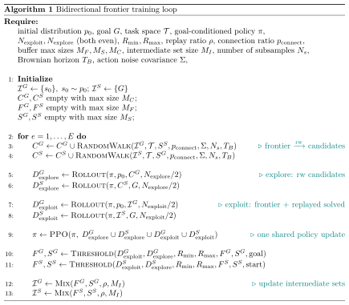
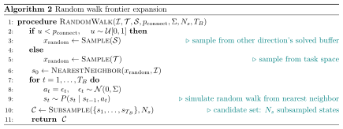
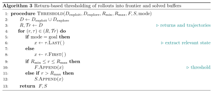
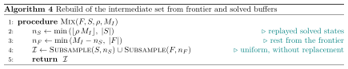

<title>Bidirectional Reachability Expansion Curriculum</title>
<style>
  /* Two themes, dark by default. Every colour on the page comes either from these variables or
     from the matching JS palette (DARK_PALETTE / LIGHT_PALETTE, read through pal()), so the toggle
     in the header is the single switch for both the chrome and the canvases. The choice persists in
     localStorage; nothing follows the OS preference, so the page always opens the way it was left. */
  :root, :root[data-theme="dark"] {
    --bg:#0b1013; --bg-raised:#121a1e; --bg-sunken:#080d0f;
    --ink:#e9eff0; --ink-dim:#9aacab; --ink-faint:#61736f;
    --line:#222e31; --line-strong:#33454a;
    --start:#4DABF7; --goal:#FF922B; --success:#51CF66;
    --success-soft:#12331c; --warn-soft:#38300f;
    --wall:#31424a; --floor:#141d21; --floor-line:#1c272b;
    --shadow: 0 1px 2px rgba(0,0,0,.5), 0 10px 26px rgba(0,0,0,.45);
    --radius: 10px;
    --mono: ui-monospace, "SF Mono", "Cascadia Code", "JetBrains Mono", Consolas, monospace;
    --sans: "Avenir Next", "Segoe UI", Roboto, "Helvetica Neue", Arial, sans-serif;
    --serif: "Iowan Old Style", "Palatino Linotype", Palatino, Georgia, "Times New Roman", serif;
    color-scheme: dark;
  }
  :root[data-theme="light"] {
    --bg:#f3f5f4; --bg-raised:#ffffff; --bg-sunken:#e9edec;
    --ink:#1b2428; --ink-dim:#4e5f64; --ink-faint:#86969a;
    --line:#d8dfe0; --line-strong:#b9c4c6;
    --start:#1c7ed6; --goal:#e8590c; --success:#2f9e44;
    --success-soft:#d3f4dc; --warn-soft:#fff1c2;
    --wall:#3b4b53; --floor:#f7f8f7; --floor-line:#e3e8e8;
    --shadow: 0 1px 2px rgba(20,30,34,.10), 0 8px 22px rgba(20,30,34,.10);
    color-scheme: light;
  }
  /* The pseudocode SVGs are black-on-transparent: inverted for the dark ground (see .alg-fig img),
     shown as-is on the light one. */
  :root[data-theme="light"] .alg-fig img { filter: none; }

  * { box-sizing: border-box; }
  html, body { margin:0; padding:0; }
  body {
    background: var(--bg); color: var(--ink); font-family: var(--sans);
    font-size: 13.5px; line-height: 1.5; -webkit-font-smoothing: antialiased;
  }
  h1, h2, h3 { text-wrap: balance; margin: 0; }
  .mono { font-family: var(--mono); font-variant-numeric: tabular-nums; }
  button:focus-visible, input:focus-visible, select:focus-visible, summary:focus-visible {
    outline: 2px solid var(--start); outline-offset: 2px;
  }

  header.top {
    display:flex; align-items:baseline; gap:18px; flex-wrap:wrap;
    padding: 15px 22px; border-bottom: 1px solid var(--line); background: var(--bg-raised);
  }
  header.top h1 { font-size: 18px; font-weight: 650; letter-spacing: -0.01em; }
  header.top .tabs { margin-left: auto; display:flex; gap:6px; }
  .tab-btn {
    font-family: var(--mono); font-size: 12px; letter-spacing: .03em; text-transform: uppercase;
    padding: 7px 13px; border-radius: 999px; border: 1px solid var(--line);
    background: var(--bg-sunken); color: var(--ink-dim); cursor: pointer;
    transition: color .13s ease, border-color .13s ease, background .13s ease;
  }
  .tab-btn:hover { color: var(--ink); border-color: var(--line-strong); }
  .tab-btn.active { background: var(--ink); border-color: var(--ink); color: var(--bg-raised); }
  .tab-btn.theme-btn { margin-left: 10px; }

  main { padding: 16px 20px 6px; max-width: 1600px; margin: 0 auto; }
  .view { display: none; }
  .view.active { display: block; }

  .explain-grid {
    display: grid; grid-template-columns: minmax(460px, 1fr) minmax(240px, 330px);
    gap: 16px; align-items: start;
  }
  @media (max-width: 980px) { .explain-grid { grid-template-columns: 1fr; } }

  .panel {
    background: var(--bg-raised); border: 1px solid var(--line); border-radius: var(--radius);
    box-shadow: var(--shadow); padding: 13px;
  }
  .panel + .panel { margin-top: 12px; }
  .panel h2 {
    font-family: var(--mono); font-size: 11px; letter-spacing: .06em; text-transform: uppercase;
    color: var(--ink-dim); margin-bottom: 8px;
  }
  .panel.compact { padding: 10px 13px; }

  .toolbar { display:flex; flex-wrap: wrap; gap: 6px; align-items:center; margin-bottom: 8px; }
  .toolbar select, .toolbar button {
    font: inherit; font-size: 12px; padding: 5px 9px; border-radius: 7px;
    border: 1px solid var(--line); background: var(--bg-sunken); color: var(--ink); cursor: pointer;
    transition: border-color .13s ease, background .13s ease;
  }
  .toolbar button:hover:not(.active) { border-color: var(--line-strong); background: var(--bg); }
  .toolbar button.active { background: var(--ink); border-color: var(--ink); color: var(--bg-raised); }
  .toolbar .spacer { flex: 1 1 auto; }

  canvas.stage {
    display:block; width: 100%; aspect-ratio: 1 / 1; height: auto; margin: 0 auto;
    /* Caps the square canvas so header + toolbar + the grid itself always fit one viewport height --
       otherwise a wide window (the explain-grid's left column can exceed 1000px) makes the grid taller
       than the visible area, and the bottom rows scroll out of view. aspect-ratio keeps width/height
       in lockstep, so capping max-width alone caps height too. 230px is a deliberately generous
       estimate of the header + main/panel padding + toolbar above it -- erring high just shrinks the
       grid a little more than strictly necessary, whereas erring low reintroduces the clipping. */
    max-width: min(100%, calc(70vh - 230px));
    border-radius: 8px; cursor: crosshair; touch-action: none;
  }
  .stage-wrap { position: relative; }
  .stage-wrap.scrubbing::after {
    content: "viewing history — click Live to resume"; position:absolute; top:8px; left:8px;
    background: var(--warn-soft); color: var(--ink); font-family: var(--mono); font-size: 11px;
    padding: 4px 9px; border-radius: 6px; pointer-events:none;
  }

  .legend {
    display:grid; grid-template-columns: repeat(auto-fit, minmax(210px, 1fr)); gap: 14px 22px;
    font-size: 11.5px; color: var(--ink-dim);
  }
  .legend-group { display:flex; flex-direction: column; gap: 5px; }
  .legend-title {
    font-family: var(--mono); font-size: 9.5px; letter-spacing: .07em; text-transform: uppercase;
    color: var(--ink-faint); margin-bottom: 2px;
  }
  .legend .item { display:flex; align-items:flex-start; gap:8px; line-height: 1.35; }
  .legend .item-note { color: var(--ink-faint); font-size: 10.5px; font-style: italic; }
  .legend .item > span:last-child { min-width: 0; }
  .legend canvas { display:block; flex:none; margin-top: 1px; }
  .legend-panel { margin-top: 12px; }

  .banner {
    margin-top: 10px; font-size: 12.5px; padding: 8px 11px; border-radius: 7px;
    background: var(--success-soft); color: var(--success); font-weight: 600; display:none;
  }
  .banner.show { display:block; }

  .btn {
    font: inherit; font-size: 12.5px; padding: 7px 12px; border-radius: 8px; cursor: pointer;
    border: 1px solid var(--line); background: var(--bg-sunken); color: var(--ink);
    transition: border-color .13s ease, background .13s ease;
  }
  .btn:hover:not(:disabled):not(.primary) { border-color: var(--line-strong); background: var(--bg); }
  .btn.primary { background: var(--ink); border-color: var(--ink); color: var(--bg-raised); font-weight: 600; }
  .btn.primary:hover:not(:disabled) { opacity: .88; }
  .btn:disabled { opacity: .4; cursor: default; }
  .stat-row { display:flex; gap: 16px; flex-wrap: wrap; margin-top: 10px; font-size: 12px; }
  .stat { color: var(--ink-dim); }
  .stat b { color: var(--ink); font-family: var(--mono); font-variant-numeric: tabular-nums; margin-left: 3px; }

  details.accordion { border: 1px solid var(--line); border-radius: 8px; margin-bottom: 7px; background: var(--bg-sunken); }
  details.accordion summary {
    cursor: pointer; padding: 9px 11px; font-size: 11.5px; font-weight: 600;
    letter-spacing: .01em; color: var(--ink-dim);
    list-style: none; display:flex; align-items:center; justify-content:space-between;
  }
  details.accordion summary:hover { color: var(--ink); }
  details.accordion[open] summary { color: var(--ink); border-bottom: 1px solid var(--line); }
  details.accordion summary::-webkit-details-marker { display:none; }
  details.accordion summary::after { content: "+"; color: var(--ink-faint); font-family: var(--mono); }
  details.accordion[open] summary::after { content: "–"; }
  details.accordion .body { padding: 4px 11px 8px; }

  .field { display:grid; grid-template-columns: 1fr auto; gap: 2px 8px; align-items:baseline; margin: 9px 0 11px; }
  .field label { font-size: 11.5px; color: var(--ink-dim); }
  .field label .sub { color: var(--ink-faint); font-size: 10px; margin-left: 5px; }
  .field .val {
    font-family: var(--mono); font-size: 11.5px; color: var(--ink); text-align:right; min-width: 34px;
    font-variant-numeric: tabular-nums;
  }
  .field input[type=range] {
    grid-column: 1 / -1; width: 100%; accent-color: var(--start); margin: 3px 0 0; height: 15px;
  }
  .field.note { grid-template-columns: 1fr; margin: 6px 0 2px; }
  .field .hint { font-size: 10.5px; color: var(--ink-faint); grid-column: 1/-1; }
  .field.locked label, .field.locked .val { opacity: .4; }
  .field.locked input[type=range] { opacity: .3; cursor: not-allowed; }

  .cfg-btns { display:flex; flex-wrap:wrap; gap:5px; margin-bottom:8px; }
  .cfg-btns .btn { font-size: 11.5px; padding: 5px 9px; }
  .cfg-btns .filebtn { display:inline-flex; align-items:center; }
  #cfgText {
    width:100%; min-height: 96px; resize: vertical; box-sizing:border-box;
    font-family: var(--mono); font-size: 10.5px; line-height: 1.45; color: var(--ink);
    background: var(--bg-sunken); border: 1px solid var(--line); border-radius: 8px; padding: 8px;
  }
  .cfg-status { font-size: 10.5px; color: var(--ink-faint); margin-top: 6px; line-height: 1.45; }
  .cfg-status.err { color: var(--goal); }
  .cfg-status.ok { color: var(--success); }

  .iteration-panel { margin-bottom: 14px; }
  .phase-strip { display:flex; gap:4px; margin-bottom: 10px; }
  .phase-pill {
    flex: 1; text-align:center; font-family: var(--mono); font-size: 10.5px; letter-spacing: .02em;
    padding: 6px 2px; border-radius: 6px; background: var(--bg-sunken); color: var(--ink-faint);
    border: 1px solid var(--line);
  }
  .phase-pill.done { color: var(--ink-dim); }
  .phase-pill.now { background: var(--ink); border-color: var(--ink); color: var(--bg-raised); }
  .run-controls { display:flex; gap: 8px; align-items:center; flex-wrap: wrap; }
  .run-controls label { font-size:12px; color:var(--ink-dim); }
  .history-row { display:flex; align-items:center; gap: 10px; margin-top: 10px; }
  .history-row input[type=range] { flex: 1; accent-color: var(--ink-dim); }
  .history-row .label { font-family: var(--mono); font-size: 11.5px; color: var(--ink-dim); white-space:nowrap; }
  /* Constant height so the ever-changing phase description never reflows the panels below it.
     Sized to the longest hint; shorter ones are padded out to the same height. */
  .pseudo-mini {
    margin-top: 10px; border-top: 1px dashed var(--line); padding-top: 9px;
    min-height: 66px;
  }
  .pseudo-mini .line { font-size: 12.5px; color: var(--ink-dim); line-height: 1.5; }

  .compare-grid { display:grid; grid-template-columns: repeat(3, 1fr); gap: 16px; }
  @media (max-width: 900px) { .compare-grid { grid-template-columns: 1fr; } }
  .compare-cell h3 { font-family: var(--mono); font-size: 12px; text-transform: uppercase; letter-spacing: .04em; margin-bottom: 6px; }
  .compare-cell canvas { 
    display:block; width: 100%; aspect-ratio: 1 / 1; height: auto; margin: 0 auto;
    /* Caps the square canvas so header + toolbar + the grid itself always fit one viewport height --
       otherwise a wide window (the explain-grid's left column can exceed 1000px) makes the grid taller
       than the visible area, and the bottom rows scroll out of view. aspect-ratio keeps width/height
       in lockstep, so capping max-width alone caps height too. 230px is a deliberately generous
       estimate of the header + main/panel padding + toolbar above it -- erring high just shrinks the
       grid a little more than strictly necessary, whereas erring low reintroduces the clipping. */
    max-width: min(100%, calc(50vh - 300px))
  }
  .compare-banner {
    margin-top: 6px; font-size: 11.5px; padding: 5px 8px; border-radius: 6px;
    background: var(--success-soft); color: var(--success); display:none; font-weight:600;
  }
  .compare-banner.show { display:block; }
  .chart-wrap { margin-top: 18px; }
  .chart-wrap canvas { 
    display:block; width: 100%; aspect-ratio: auto; height: auto; margin: 0 auto;
    /* Caps the square canvas so header + toolbar + the grid itself always fit one viewport height --
       otherwise a wide window (the explain-grid's left column can exceed 1000px) makes the grid taller
       than the visible area, and the bottom rows scroll out of view. aspect-ratio keeps width/height
       in lockstep, so capping max-width alone caps height too. 230px is a deliberately generous
       estimate of the header + main/panel padding + toolbar above it -- erring high just shrinks the
       grid a little more than strictly necessary, whereas erring low reintroduces the clipping. */
    max-width: min(100%, calc(100vh - 230px))}
  .chart-wrap h2 { font-family:var(--mono); font-size:11px; text-transform:uppercase; letter-spacing:.06em; color:var(--ink-dim); margin-bottom:6px; }
  .chart-legend { display:flex; gap:14px; flex-wrap:wrap; font-size:11.5px; color:var(--ink-dim); margin-top:6px; }
  .chart-legend .item { display:flex; align-items:center; gap:5px; }
  .chart-legend .ln { width:18px; height:0; border-top: 2px solid; display:inline-block; }
  .chart-legend .ln.dash { border-top-style: dashed; }

  /* ---- Compiled LaTeX algorithm figures ---- */
  .algo-wrap { max-width: 940px; margin: 0 auto; }
  /* Compiled LaTeX algorithm figures (img/alg_*.svg, built from the alg_*.tex siblings).
     The SVGs are black glyphs and rules on a transparent ground, with #008080 comments. Inverting
     and rotating the hue 180deg lifts the text to white against this page's dark ground and carries
     the teal through as a brighter teal, while transparent pixels stay transparent -- so no light
     card is needed and the LaTeX typesetting is untouched. Natural width is 435pt (~580px); the
     cap below renders them at about 1.5x so the body type sits near the page's own size. */
  .alg-fig { margin: 0 0 28px; padding: 0; overflow-x: auto; }
  .alg-fig img {
    display: block; width: 100%; min-width: 520px; height: auto;
    filter: invert(1) hue-rotate(180deg);
  }
  .alg-fig.missing { border: 1px dashed var(--line-strong); border-radius: var(--radius); }
  .alg-fig.missing img { display: none; }
  .alg-fig.missing::after {
    content: "waiting for " attr(data-file) " \2014 drop it in this folder";
    display: block; font-family: var(--mono); font-size: 12px; color: var(--ink-dim); padding: 10px 2px;
  }

  .footer-credit { text-align:center; color: var(--ink-faint); font-size: 11.5px; padding: 14px 0 30px; }
</style>

<header class="top">
  <h1>Bidirectional Reachability Expansion Curriculum</h1>
  <div class="tabs">
    <button class="tab-btn active" data-view="explain">Explain</button>
    <button class="tab-btn" data-view="compare">Compare</button>
    <button class="tab-btn" data-view="algorithm">Pseudocode</button>
    <button class="tab-btn theme-btn" id="themeBtn" title="Switch between dark and light" aria-label="Toggle colour theme">☀ light</button>
  </div>
</header>

<main>
  <!-- ============================== EXPLAIN VIEW ============================== -->
  <div class="view active" id="view-explain">

    <!-- iteration steps — full width, on top -->
    <div class="panel iteration-panel">
      <h2>Iteration — 5 phases</h2>
      <div class="phase-strip" id="phaseStrip"></div>
      <div class="run-controls">
        <button class="btn primary" id="stepBtn">Step phase ▸</button>
        <button class="btn" id="stepIterBtn">Step iteration ▸▸</button>
        <button class="btn" id="runBtn">Run</button>
        <button class="btn" id="stopBtn" disabled>Stop</button>
        <button class="btn" id="resetRunBtn">Reset run</button>
        <button class="btn" id="exportPngBtn" title="Save the stage as it is right now (current phase, or the scrubbed-to iteration) as a PNG">Export PNG ↧</button>
        <button class="btn" id="recGifBtn" title="Record one frame per iteration, then save an animated GIF. Resetting the run discards the recording.">Record GIF ●</button>
        <label>speed <input type="range" id="speedRange" min="1" max="8" value="4" style="width:90px;vertical-align:middle"></label>
        <span class="spacer"></span>
        <span class="stat">iteration <b id="statIter">0</b></span>
        <span class="stat">goals reached <b id="statGoals">0 / 1</b></span>
      </div>
      <div class="history-row">
        <span class="label">history</span>
        <input type="range" id="historyRange" min="0" max="0" value="0" disabled>
        <span class="label" id="historyLabel">live</span>
        <button class="btn" id="historyLiveBtn">Live</button>
      </div>
      <div class="pseudo-mini" id="phaseMini"></div>
    </div>

    <!-- grid | sliders -->
    <div class="explain-grid">
      <div class="panel">
        <h2>Maze stage</h2>
        <div class="toolbar">
          <select id="presetSelect">
            <option value="ring" selected>Broken ring 7×7</option>
            <option value="blank">Blank 11×11</option>
            <option value="medium">Medium maze</option>
            <option value="g">G-maze</option>
          </select>
          <button id="modeWall" class="active">Draw walls</button>
          <button id="modeErase">Erase</button>
          <button id="modeAnchor">Place goal (G)</button>
          <button id="modeInit">Set start (S)</button>
        </div>
        <div class="stage-wrap" id="stageWrap">
          <canvas id="stageCanvas" class="stage" width="720" height="720"></canvas>
        </div>
        <div class="banner" id="achievedBanner"></div>
      </div>

      <div>
        <div class="panel compact">
          <h2>Mode</h2>
          <div class="toolbar">
            <button id="presetBidir" class="active">Bidirectional</button>
            <button id="presetFwd">Forward-only</button>
            <button id="presetBwd">Backward-only</button>
          </div>
        </div>

        <details class="accordion" open>
          <summary>Walk seeding — connect / voronoi</summary>
          <div class="body">
            <div class="field"><label>forward connect <span class="sub">greedyness towards solved intermediate starts (blue dots)</span></label><span class="val" id="v_goalConnectRatio"></span><input type="range" id="goalConnectRatio" min="0" max="1" step="0.01"></div>
            <div class="field"><label>backward connect <span class="sub">greedyness towards solved intermediate goals (orange dots)</span></label><span class="val" id="v_skillConnectRatio"></span><input type="range" id="skillConnectRatio" min="0" max="1" step="0.01"></div>
            <div class="field note" id="connectLockNote" style="display:none"><div class="hint">Locked — connect needs an opposite expansion set.</div></div>
          </div>
        </details>

        <details class="accordion">
          <summary>Policy simulation</summary>
          <div class="body">
            <div class="field"><label>skill transfer <span class="sub">simulates how policy training on one expansion set affects the other</span></label><span class="val" id="v_crossBoost"></span><input type="range" id="crossBoost" min="0" max="0.5" step="0.01"></div>
          </div>
        </details>

        <details class="accordion">
          <summary>Envs &amp; horizons</summary>
          <div class="body">
            <div class="field"><label>rollout envs</label><span class="val" id="v_numTrainEnvs"></span><input type="range" id="numTrainEnvs" min="4" max="48" step="2"></div>
            <div class="field"><label>random-walk envs</label><span class="val" id="v_numWalkEnvs"></span><input type="range" id="numWalkEnvs" min="4" max="48" step="2"></div>
            <div class="field"><label>random walk length</label><span class="val" id="v_walkHorizon"></span><input type="range" id="walkHorizon" min="5" max="40" step="1"></div>
            <div class="field"><label>episode horizon <span class="sub">longer trips time out</span></label><span class="val" id="v_maxSteps"></span><input type="range" id="maxSteps" min="20" max="200" step="5"></div>
          </div>
        </details>

        <details class="accordion">
          <summary>Import / export config</summary>
          <div class="body">
            <div class="cfg-btns">
              <button class="btn" id="cfgExportBtn">Export ↧</button>
              <button class="btn" id="cfgImportBtn">Import ↥</button>
              <button class="btn" id="cfgCopyBtn">Copy</button>
              <button class="btn" id="cfgDownloadBtn">Download</button>
              <label class="btn filebtn">Load file<input type="file" id="cfgFile" accept="application/json,.json" hidden></label>
            </div>
            <textarea id="cfgText" spellcheck="false" placeholder="Click Export to capture the current maze + settings here, or paste a config and click Import."></textarea>
            <div class="cfg-status" id="cfgStatus">Export writes the current maze + all settings as JSON. To make one the boot default, paste it into the SHIPPED_DEFAULT constant near the top of this file's script.</div>
          </div>
        </details>
      </div>
    </div>

    <!-- legend — full width, at bottom -->
    <div class="panel legend-panel">
      <h2>Legend</h2>
      <div class="legend" id="legendRow"></div>
    </div>
  </div>

  <!-- ============================== COMPARE VIEW ============================== -->
  <div class="view" id="view-compare">
    <div class="panel">
      <h2>Race: forward-only vs backward-only vs bidirectional</h2>
      <div class="run-controls">
        <button class="btn primary" id="cmpRunBtn">Run</button>
        <button class="btn" id="cmpStopBtn" disabled>Stop</button>
        <button class="btn" id="cmpResetBtn">Reset</button>
        <label>speed <input type="range" id="cmpSpeedRange" min="1" max="8" value="4" style="width:88px;vertical-align:middle"></label>
        <span class="spacer"></span>
        <label>fwd connect <b class="mono" id="cmpVGoalConnect">0.50</b> <input type="range" id="cmpGoalConnect" min="0" max="1" step="0.01" value="0.5" style="width:80px;vertical-align:middle"></label>
        <label>bwd connect <b class="mono" id="cmpVSkillConnect">0.50</b> <input type="range" id="cmpSkillConnect" min="0" max="1" step="0.01" value="0.5" style="width:80px;vertical-align:middle"></label>
        <span class="spacer"></span>
        <label>seeds averaged <b class="mono" id="cmpVSeeds">5</b> <input type="range" id="cmpSeedsRange" min="1" max="12" step="1" value="5" style="width:80px;vertical-align:middle"></label>
      </div>
      <div class="stat" style="margin: 2px 0 0">connect ratios apply to the bidirectional pane; the single-direction panes force them to 0 (no opposite tree). Maze &amp; env settings mirror the Explain tab — edit there, then return.</div>
      <div class="stat" id="cmpMeanStatus" style="margin: 2px 0 0"></div>
      <div class="compare-grid" style="margin-top:14px">
        <div class="compare-cell">
          <h3>Forward-only</h3>
          <canvas id="cmpCanvasFwd" width="360" height="360"></canvas>
          <div class="stat-row"><span class="stat">iter <b class="mono" id="cmpIterFwd">0</b></span><span class="stat">goals <b class="mono" id="cmpGoalsFwd">0 / 1</b></span></div>
          <div class="compare-banner" id="cmpBannerFwd">all goals reached at iteration —</div>
        </div>
        <div class="compare-cell">
          <h3>Backward-only</h3>
          <canvas id="cmpCanvasBwd" width="360" height="360"></canvas>
          <div class="stat-row"><span class="stat">iter <b class="mono" id="cmpIterBwd">0</b></span><span class="stat">goals <b class="mono" id="cmpGoalsBwd">0 / 1</b></span></div>
          <div class="compare-banner" id="cmpBannerBwd">all goals reached at iteration —</div>
        </div>
        <div class="compare-cell">
          <h3>Bidirectional</h3>
          <canvas id="cmpCanvasBidir" width="360" height="360"></canvas>
          <div class="stat-row"><span class="stat">iter <b class="mono" id="cmpIterBidir">0</b></span><span class="stat">goals <b class="mono" id="cmpGoalsBidir">0 / 1</b></span></div>
          <div class="compare-banner" id="cmpBannerBidir">all goals reached at iteration —</div>
        </div>
      </div>
      <div class="chart-wrap">
        <h2>goals reached vs. iteration (mean over seeds)</h2>
        <canvas id="chartCanvas" width="1200" height="220"></canvas>
        <div class="chart-legend" id="goalsChartLegend"></div>
      </div>
      <div class="chart-wrap">
        <h2>covered region vs. iteration: fraction of free cells covered (mean over seeds)</h2>
        <canvas id="coverageChartCanvas" width="1200" height="220"></canvas>
        <div class="chart-legend" id="coverageChartLegend"></div>
      </div>
    </div>
  </div>

  <!-- ============================== ALGORITHM VIEW ============================== -->
  <div class="view" id="view-algorithm">
    <div class="algo-wrap">
      <figure class="alg-fig" data-file="img/alg_training_loop.svg">
        
      </figure>
      <figure class="alg-fig" data-file="img/alg_random_walk.svg">
        
      </figure>
      <figure class="alg-fig" data-file="img/alg_threshold.svg">
        
      </figure>
      <figure class="alg-fig" data-file="img/alg_mix.svg">
        
      </figure>
    </div>
  </div>
</main>

<div class="footer-credit">Bidirectional Reachability Expansion Curriculum · 2D explainer</div>

<script>
"use strict";

/* ============================== 1. Utilities ============================== */

function mulberry32(seed) {
  let a = seed >>> 0;
  return function () {
    a |= 0; a = (a + 0x6D2B79F5) | 0;
    let t = Math.imul(a ^ (a >>> 15), 1 | a);
    t = (t + Math.imul(t ^ (t >>> 7), 61 | t)) ^ t;
    return ((t ^ (t >>> 14)) >>> 0) / 4294967296;
  };
}
function gaussian(rng) {
  let u = 0, v = 0;
  while (u === 0) u = rng();
  while (v === 0) v = rng();
  return Math.sqrt(-2 * Math.log(u)) * Math.cos(2 * Math.PI * v);
}
function clamp(v, lo, hi) { return Math.max(lo, Math.min(hi, v)); }
function wrapAngle(a) { while (a > Math.PI) a -= 2 * Math.PI; while (a < -Math.PI) a += 2 * Math.PI; return a; }
function sqDist(a, b) { let s = 0; for (let i = 0; i < a.length; i++) { const d = a[i] - b[i]; s += d * d; } return s; }
function shuffledIndices(n, rng) {
  const idx = new Array(n);
  for (let i = 0; i < n; i++) idx[i] = i;
  for (let i = n - 1; i > 0; i--) { const j = Math.floor(rng() * (i + 1));[idx[i], idx[j]] = [idx[j], idx[i]]; }
  return idx;
}
function choice(arr, rng) { return arr[Math.floor(rng() * arr.length)]; }

/* ============================== 2. Palette / theme ==============================
   Colour language:
     BLUE   — everything about the START side (start region S, backward tree, start coverage)
     WARM   — everything about the GOAL side (each goal its own warm hue, forward tree, goal coverage)
     GREEN  — achieved / connected (a goal proven reachable, a successful rollout, overlapping coverage)
   Blue-vs-orange is the standard dichromat-safe pairing. Green is the one hue that can be confusable
   with warm tones for deuteranopes, so "achieved" is ALWAYS also encoded non-chromatically: a solid
   ring around the goal, a stat counter, and an explicit banner. */
const DARK_PALETTE = {
  bgRaised: "#121a1e", ink: "#e9eff0", inkDim: "#9aacab", inkFaint: "#61736f", line: "#222e31",
  // walls are LIGHTER than the floor here: on a dark ground a lighter block reads as solid
  // structure, whereas a darker one reads as a hole
  wall: "#31424a", floor: "#141d21", floorLine: "#1c272b",
  start: "#4DABF7",
  // start side — blues, one shade per goal's backward tree, kept clearly separable in lightness
  startShades: ["#4DABF7", "#8FD0FF", "#3B8DD0", "#B197FC"],
  // goal side — warm hues, distinct in hue AND lightness so they survive greyscale/dichromat viewing
  goalShades: ["#FF922B", "#FF6B6B", "#F783AC", "#FFD43B"],
  goalGeneric: "#FF922B",
  success: "#51CF66",
};
/* Light twin. Same colour language; walls are DARKER than the floor here, since on a light ground
   a darker block reads as solid structure. Tree hues are pulled down a step so the thin rollout
   strokes keep contrast against white, and start/goal/success stay the same three hue families so
   nothing has to be re-learned when switching. */
const LIGHT_PALETTE = {
  bgRaised: "#ffffff", ink: "#1b2428", inkDim: "#4e5f64", inkFaint: "#86969a", line: "#d8dfe0",
  wall: "#3b4b53", floor: "#f7f8f7", floorLine: "#e3e8e8",
  start: "#1c7ed6",
  startShades: ["#1c7ed6", "#4dabf7", "#1864ab", "#7048e8"],
  goalShades: ["#e8590c", "#e03131", "#d6336c", "#f08c00"],
  goalGeneric: "#e8590c",
  success: "#2f9e44",
};
const THEME_KEY = "gccure-demo-theme";
function currentTheme() { return document.documentElement.dataset.theme === "light" ? "light" : "dark"; }
function pal() { return currentTheme() === "light" ? LIGHT_PALETTE : DARK_PALETTE; }
function applyTheme(theme, persist) {
  document.documentElement.dataset.theme = theme;
  if (persist) { try { localStorage.setItem(THEME_KEY, theme); } catch (e) { /* private mode etc. */ } }
  const btn = document.getElementById("themeBtn");
  if (btn) btn.textContent = theme === "light" ? "☾ dark" : "☀ light";
}
function goalColor(colors, k) { return colors.goalShades[k % colors.goalShades.length]; }
function startColor(colors, k) { return colors.startShades[(k || 0) % colors.startShades.length]; }

/* ============================== 3. Maze presets + grid model ============================== */

const MAZES = {
  blank: Array.from({ length: 11 }, (_, i) =>
    i === 0 || i === 10 ? "W".repeat(11) : "W" + "o".repeat(9) + "W"
  ),
  medium: [
    "WWWWWWWWWWWW", "WooWoooWooIW", "WWoWoWoWoWWW", "WooWGWoooooW", "WoWWWWoWWWoW",
    "WooooooWoooW", "WoWWoWoWoWoW", "WooooWoooooW", "WWWWWWWWWWWW",
  ],
  g: ["WWWWWWW", "WooooGW", "WoWWWWW", "WoWIooW", "WoWWWoW", "WoooooW", "WWWWWWW"],
  // Ring corridor around a solid 3x3 core, broken at (1,3). Going left along the bottom from S is
  // the SHORTER way toward G and dead-ends after two cells; the only route is the long way up the
  // right side and back along the top. The boot default.
  ring: ["WWWWWWW", "WGooooW", "WoWWWoW", "WWWWWoW", "WoWWWoW", "WooooIW", "WWWWWWW"],
};
const MAX_GOALS = 4;

function parseMaze(rows) {
  const H = rows.length, W = rows[0].length;
  const walls = new Uint8Array(W * H);
  let init = null;
  const anchors = [];
  for (let y = 0; y < H; y++) {
    for (let x = 0; x < W; x++) {
      const ch = rows[y][x];
      const i = y * W + x;
      if (ch === "W") walls[i] = 1;
      else if (ch === "I") init = { x: x + 0.5, y: y + 0.5 };
      else if (ch === "G") anchors.push({ x: x + 0.5, y: y + 0.5 });
    }
  }
  if (!init) init = firstFreeCell(W, H, walls);
  if (anchors.length === 0) anchors.push(lastFreeCell(W, H, walls));
  return { W, H, walls, init, anchors };
}
function firstFreeCell(W, H, walls) {
  for (let y = 0; y < H; y++) for (let x = 0; x < W; x++) if (!walls[y * W + x]) return { x: x + 0.5, y: y + 0.5 };
  return { x: 0.5, y: 0.5 };
}
function lastFreeCell(W, H, walls) {
  for (let y = H - 1; y >= 0; y--) for (let x = W - 1; x >= 0; x--) if (!walls[y * W + x]) return { x: x + 0.5, y: y + 0.5 };
  return { x: 0.5, y: 0.5 };
}
function loadPreset(name) {
  const g = parseMaze(MAZES[name]);
  g.name = name;
  return g;
}
function countFreeCells(grid) {
  let c = 0;
  for (let i = 0; i < grid.walls.length; i++) if (!grid.walls[i]) c++;
  return Math.max(c, 1);
}
function cellIdxOf(grid, x, y) {
  const cx = clamp(Math.floor(x), 0, grid.W - 1), cy = clamp(Math.floor(y), 0, grid.H - 1);
  return cy * grid.W + cx;
}
function cellXY(grid, idx) { return { cx: idx % grid.W, cy: (idx / grid.W) | 0 }; }
function isWallAt(grid, x, y) {
  if (x < 0 || y < 0 || x >= grid.W || y >= grid.H) return true;
  return grid.walls[cellIdxOf(grid, x, y)] === 1;
}
function neighbors4(grid, idx) {
  const { cx, cy } = cellXY(grid, idx);
  const out = [];
  if (cx + 1 < grid.W) out.push(idx + 1);
  if (cx - 1 >= 0) out.push(idx - 1);
  if (cy + 1 < grid.H) out.push(idx + grid.W);
  if (cy - 1 >= 0) out.push(idx - grid.W);
  return out;
}
function makeDistCache(grid) { return { grid, cache: new Map() }; }
function distFieldFor(distCache, gx, gy) {
  const idx = cellIdxOf(distCache.grid, gx, gy);
  let d = distCache.cache.get(idx);
  if (d) return d;
  d = bfsDistance(distCache.grid, idx);
  distCache.cache.set(idx, d);
  return d;
}
function bfsDistance(grid, goalIdx) {
  const dist = new Float32Array(grid.W * grid.H).fill(Infinity);
  if (grid.walls[goalIdx]) return dist;
  dist[goalIdx] = 0;
  const q = [goalIdx]; let head = 0;
  while (head < q.length) {
    const cur = q[head++]; const d = dist[cur];
    for (const n of neighbors4(grid, cur)) {
      if (grid.walls[n]) continue;
      if (dist[n] > d + 1) { dist[n] = d + 1; q.push(n); }
    }
  }
  return dist;
}
function gradientAt(distArr, grid, x, y) {
  const cx = clamp(Math.floor(x), 0, grid.W - 1), cy = clamp(Math.floor(y), 0, grid.H - 1);
  const here = distArr[cy * grid.W + cx];
  if (!isFinite(here)) return null;
  const rd = (x2, y2) => {
    if (x2 < 0 || y2 < 0 || x2 >= grid.W || y2 >= grid.H) return here + 1;
    const v = distArr[y2 * grid.W + x2];
    return isFinite(v) ? v : here + 1;
  };
  const gx = rd(cx + 1, cy) - rd(cx - 1, cy);
  const gy = rd(cx, cy + 1) - rd(cx, cy - 1);
  if (gx === 0 && gy === 0) return null;
  return { x: gx, y: gy };
}
function countTrue(arr) { let c = 0; for (let i = 0; i < arr.length; i++) if (arr[i]) c++; return c; }
function countTrueAny(arrs, n) { let c = 0; for (let i = 0; i < n; i++) { for (const a of arrs) if (a[i]) { c++; break; } } return c; }
function unionMask(arrs, n) {
  const out = new Uint8Array(n);
  for (let i = 0; i < n; i++) for (const a of arrs) if (a[i]) { out[i] = 1; break; }
  return out;
}
/* Cell-center points tracing the shortest corridor from (fromX,fromY) to the goal that owns distArr,
   by descending the BFS distance field one hop at a time. Used to visually COMPLETE a solved rollout
   that stopped short of its goal, along real corridors (never across walls) -- see drawFrame. */
function geodesicPathToGoal(grid, distArr, fromX, fromY) {
  let idx = cellIdxOf(grid, fromX, fromY);
  const pts = [];
  let guard = 0;
  while (isFinite(distArr[idx]) && distArr[idx] > 0 && guard++ < grid.W * grid.H) {
    let best = idx, bestD = distArr[idx];
    for (const nb of neighbors4(grid, idx)) if (!grid.walls[nb] && distArr[nb] < bestD) { bestD = distArr[nb]; best = nb; }
    if (best === idx) break;
    idx = best;
    const { cx, cy } = cellXY(grid, idx);
    pts.push({ x: cx + 0.5, y: cy + 0.5 });
  }
  return pts;
}

/* Display geometry for a rollout. The simulated path is a continuous trace that hugs walls and
   jitters under the turn-rate limit; drawn raw, thirty of them are noise. This rebuilds each one as
   a curve that keeps three things exactly -- the start point, the end point, and the sequence of
   cells the agent passed through -- and nothing else.

   1. Cell sequence: every cell the trace entered, in order, consecutive repeats dropped. A step of
      up to 0.55 at 45deg can hop DIAGONALLY between cells (the simulator only checks the landing
      point), cutting a corner that a wall may share. Such hops get the free orthogonal neighbour
      inserted -- the one nearer the trace's own midpoint -- so the drawn route only ever moves
      between 4-adjacent cells; that is the one place it adds a cell the trace did not strictly
      occupy, and it is the agent's own corner-cut made explicit.
   2. Polyline: exact start, the CENTRE of every interior cell, exact end. The first and last cells
      contribute the real endpoints rather than their centres, so nothing hooks back to a centre it
      never needed to visit. Each segment joins a point in one cell to a point in a 4-adjacent cell,
      and two adjacent cells form a convex 2x1 box, so every segment is wall-free.
   3. Chaikin corner cutting, which is a quadratic B-spline with the ends pinned. It never leaves the
      convex hull of three consecutive points, and every such hull here lies inside one cell or one
      adjacent pair (the worst case is a start point in a far corner, whose 75%-point still lands
      within 0.4 of the next centre), so the smoothed curve cannot touch a wall either.
   Straight runs stay straight, turns become arcs, and a route that doubles back keeps a visible
   spike where the agent actually reversed. */
function smoothCellPath(grid, path, passes) {
  if (!path || path.length < 2) return (path || []).map((p) => [p.x, p.y]);
  const cells = [];
  for (let n = 0; n < path.length; n++) {
    const p = path[n];
    const idx = cellIdxOf(grid, p.x, p.y);
    if (cells.length === 0) { cells.push(idx); continue; }
    const prev = cells[cells.length - 1];
    if (idx === prev) continue;
    const a = cellXY(grid, prev), b = cellXY(grid, idx);
    if (Math.abs(a.cx - b.cx) === 1 && Math.abs(a.cy - b.cy) === 1) {
      // diagonal hop: route through a free orthogonal neighbour
      const c1 = b.cy * grid.W + a.cx, c2 = a.cy * grid.W + b.cx;
      const free1 = !grid.walls[c1], free2 = !grid.walls[c2];
      if (free1 || free2) {
        let via = free1 ? c1 : c2;
        if (free1 && free2) {
          const q = path[n - 1];
          const mx = (q.x + p.x) / 2, my = (q.y + p.y) / 2;
          const d1 = Math.hypot(a.cx + 0.5 - mx, b.cy + 0.5 - my), d2 = Math.hypot(b.cx + 0.5 - mx, a.cy + 0.5 - my);
          via = d1 <= d2 ? c1 : c2;
        }
        cells.push(via);
      }
    }
    cells.push(idx);
  }
  const first = path[0], last = path[path.length - 1];
  let pts = [[first.x, first.y]];
  for (let i = 1; i < cells.length - 1; i++) { const { cx, cy } = cellXY(grid, cells[i]); pts.push([cx + 0.5, cy + 0.5]); }
  pts.push([last.x, last.y]);
  for (let k = 0; k < (passes == null ? 3 : passes); k++) {
    if (pts.length < 3) break;
    const out = [pts[0]];
    for (let i = 0; i < pts.length - 1; i++) {
      const a = pts[i], b = pts[i + 1];
      out.push([0.75 * a[0] + 0.25 * b[0], 0.75 * a[1] + 0.25 * b[1]]);
      out.push([0.25 * a[0] + 0.75 * b[0], 0.25 * a[1] + 0.75 * b[1]]);
    }
    out.push(pts[pts.length - 1]);
    pts = out;
  }
  return pts;
}

/* ============================== 4. Kinematics: rollout + random walk ============================== */
function applyInitSubspaceMask(state, cfg) { return { x: state.x, y: state.y, theta: state.theta, v: cfg.defaultV }; }

function initialSampleOne(grid, rng) {
  const r = 0.35;
  const x = clamp(grid.init.x + (rng() * 2 - 1) * r, 0.05, grid.W - 0.05);
  const y = clamp(grid.init.y + (rng() * 2 - 1) * r, 0.05, grid.H - 0.05);
  return { x: isWallAt(grid, x, y) ? grid.init.x : x, y: isWallAt(grid, x, y) ? grid.init.y : y, theta: rng() * 2 * Math.PI, v: 0.5 };
}
function taskSpaceSampleOne(grid, rng) {
  for (let tries = 0; tries < 40; tries++) {
    const x = rng() * grid.W, y = rng() * grid.H;
    if (!isWallAt(grid, x, y)) return { x, y, theta: rng() * 2 * Math.PI, v: 0.5 };
  }
  return { x: grid.init.x, y: grid.init.y, theta: 0, v: 0.5 };
}

function policyRollout(grid, distCache, spawnState, goalXY, comp, cfg, rng, boostCells) {
  const distArr = distFieldFor(distCache, goalXY[0], goalXY[1]);
  const startCellIdx = cellIdxOf(grid, spawnState.x, spawnState.y);
  // An unreachable goal (walled off from the spawn, easy to create with the grid editor) has an
  // INFINITE start distance. Collapsing that to 0 made the reward formula below return a perfect
  // 1.0, so sealing a goal behind a wall used to mark it solved and shade it covered.
  const startReachable = isFinite(distArr[startCellIdx]);
  const startDist = startReachable ? distArr[startCellIdx] : 0;
  let { x, y, theta } = spawnState;
  const v = cfg.defaultV;
  const path = [{ x, y }];
  const visitedCellIndices = [startCellIdx];
  let curCellIdx = startCellIdx;
  let stalled = false, t = 0;
  for (; t < cfg.maxSteps; t++) {
    if (!isFinite(distArr[curCellIdx])) break;
    // BFS distances are integer hop counts, so this fires exactly in the goal's own cell
    if (distArr[curCellIdx] <= 0.35) break;
    const g = gradientAt(distArr, grid, x, y);
    // A flat gradient away from the goal cell is a plateau/dead spot, NOT an arrival. Treating it
    // as one used to hand out spurious "reached the goal" flags in the middle of the maze.
    if (!g) break;
    const desired = Math.atan2(-g.y, -g.x);
    theta += clamp(wrapAngle(desired - theta), -cfg.turnRateMax, cfg.turnRateMax);
    const nx = x + Math.cos(theta) * v * cfg.dt, ny = y + Math.sin(theta) * v * cfg.dt;
    if (isWallAt(grid, nx, ny)) continue;
    x = nx; y = ny;
    path.push({ x, y });
    const nCellIdx = cellIdxOf(grid, x, y);
    if (nCellIdx !== curCellIdx) {
      // The agent is physically in nCellIdx now regardless of whether it survives to keep going,
      // so curCellIdx (which reward/finalCellIdx/arrived all read below) must update unconditionally.
      // Previously it only updated on survival, leaving it one cell stale whenever a rollout
      // stumbled on the exact step that crossed into the goal's cell -- the drawn path already
      // showed the agent arriving, but reward/finalCellIdx were still computed from the cell it
      // left, so a visually-successful rollout could be scored (and coloured) as a near miss.
      // Cross-tree hand-off boost: a cell the OPPOSITE tree has already proven (boostCells) is
      // treated as more competent than this policy has earned on its own, so the two frontiers
      // accelerate each other where they overlap -- the concrete payoff of bidirectionality. The
      // boost moves the effective competence a crossBoost fraction of the way to 1.
      let cEff = comp.c[nCellIdx];
      if (boostCells && boostCells[nCellIdx] && cfg.crossBoost > 0) cEff = cEff + cfg.crossBoost * (1 - cEff);
      const survived = rng() < Math.pow(cEff, cfg.alpha);
      curCellIdx = nCellIdx;
      if (!survived) { stalled = true; break; }
      visitedCellIndices.push(nCellIdx); // only a SURVIVED cell counts as practiced
    }
  }
  const finalDist = isFinite(distArr[curCellIdx]) ? distArr[curCellIdx] : startDist;
  const reward = !startReachable ? 0 : startDist <= 0 ? 1 : clamp(2 - finalDist, 0, 2);
  // Spawned already inside the goal cell (startDist 0): the reward above is pinned to exactly 1 --
  // r_max, the TOP of the frontier band -- so "solved" (reward > r_max) is unreachable for this
  // rollout no matter what. That is deliberate (it stops the bootstrap start==goal seed from reading
  // as pre-solved on iteration 0), but it means such a rollout can only ever land in the frontier
  // band. The band split must therefore ignore it outright; otherwise it re-marks the goal cell (and,
  // for a forward walk-harvested goal that sits on the start, the start cell) as frontier every
  // iteration, leaving both stuck bright forever with no path to solved. Flag it so phase 5 can skip.
  const spawnAtGoal = startReachable && startDist <= 0;
  // Derived from the same (now always-accurate) curCellIdx/distArr that reward and finalCellIdx
  // use, so "arrived" -- which snaps the drawn path exactly onto the goal marker -- can never
  // disagree with them again.
  const arrived = isFinite(distArr[curCellIdx]) && distArr[curCellIdx] <= 0.35;
  return {
    reward, path, visitedCellIndices, spawnAtGoal,
    achievedStart: { x: spawnState.x, y: spawnState.y, theta: spawnState.theta, v: cfg.defaultV },
    finalState: { x, y, theta, v }, finalCellIdx: curCellIdx, stalled, arrived, timedOut: t >= cfg.maxSteps,
  };
}

function randomWalk(grid, seedState, horizon, noiseCfg, rng) {
  let { x, y, theta } = seedState, v = noiseCfg.v0;
  const path = [{ x, y }];
  for (let t = 0; t < horizon; t++) {
    theta = wrapAngle(theta + gaussian(rng) * noiseCfg.turnSigma);
    v = clamp(v + gaussian(rng) * noiseCfg.speedSigma, noiseCfg.vMin, noiseCfg.vMax);
    const nx = x + Math.cos(theta) * v * noiseCfg.dt, ny = y + Math.sin(theta) * v * noiseCfg.dt;
    if (!isWallAt(grid, nx, ny)) { x = nx; y = ny; }
    path.push({ x, y, theta, v });
  }
  return path;
}
function subsample(path, n) {
  if (path.length <= n) return path.slice();
  const out = [];
  for (let i = 0; i < n; i++) out.push(path[Math.round((i * (path.length - 1)) / (n - 1))]);
  return out;
}

/* ============================== 5. Pair schema + SimilarityBuffer ============================== */
function makePair(goalXY, state) { return [goalXY[0], goalXY[1], state.x, state.y, state.theta || 0, state.v || 0]; }
function splitPair(pair) { return { goal: [pair[0], pair[1]], state: { x: pair[2], y: pair[3], theta: pair[4], v: pair[5] } }; }
function projGoalXY(pair) { return [pair[0], pair[1]]; }
function projStartSearchXY(pair) { return [pair[2], pair[3]]; }
/* Start-side novelty keeps the heading dim (as (cos,sin) to avoid a wraparound discontinuity), so the
   space starts are STORED in stays strictly larger than the (x,y) space they are SEARCHED in — the
   real curriculum's init_subspace-vs-goal-subspace asymmetry. Heading is no longer drawn. */
function projStartNoveltyXYTheta(thetaWeight) {
  return (pair) => [pair[2], pair[3], Math.cos(pair[4]) * thetaWeight, Math.sin(pair[4]) * thetaWeight];
}

class SimilarityBuffer {
  constructor({ searchProj, noveltyProj, maxSize }) {
    this.searchProj = searchProj;
    this.noveltyProj = noveltyProj || searchProj;
    this.maxSize = maxSize;
    this.items = []; this.searchVecs = []; this.noveltyVecs = [];
  }
  get length() { return this.items.length; }
  _evict() { while (this.items.length > this.maxSize) { this.items.shift(); this.searchVecs.shift(); this.noveltyVecs.shift(); } }
  add(rows) {
    for (const row of rows) { this.items.push(row); this.searchVecs.push(this.searchProj(row)); this.noveltyVecs.push(this.noveltyProj(row)); }
    this._evict();
  }
  /* Returns the rows actually kept (not just a count), so callers can visualize exactly what entered
     the buffer this call. Semantics otherwise match SimilarityBuffer.add_novel: a row survives iff its
     nearest neighbour — in the buffer OR among rows already accepted in this same call — is >= eps. */
  addNovel(rows, minSqDist) {
    const kept = [];
    const acceptedVecs = [];
    for (const row of rows) {
      const v = this.noveltyProj(row);
      let minD = Infinity;
      for (const ex of this.noveltyVecs) { const d = sqDist(v, ex); if (d < minD) minD = d; if (minD < minSqDist) break; }
      if (minD >= minSqDist) for (const ex of acceptedVecs) { const d = sqDist(v, ex); if (d < minD) minD = d; if (minD < minSqDist) break; }
      if (minSqDist <= 0 || minD >= minSqDist) {
        this.items.push(row); this.searchVecs.push(this.searchProj(row)); this.noveltyVecs.push(v);
        acceptedVecs.push(v); kept.push(row);
      }
    }
    this._evict();
    return kept;
  }
  getSimilar(query, knn, rng) {
    if (this.items.length === 0) return null;
    const dists = this.searchVecs.map((v, i) => [sqDist(v, query), i]);
    dists.sort((a, b) => a[0] - b[0]);
    const k = Math.min(knn, dists.length);
    return this.items[dists[Math.floor(rng() * k)][1]];
  }
}

/* ============================== 6. Competence field ============================== */
class CompetenceField {
  constructor(grid) { this.c = new Float32Array(grid.W * grid.H).fill(0); }
  reinforceOne(idx, lr) { this.c[idx] += lr * (1 - this.c[idx]); }
  reinforce(idx, grid, lr, spillover) {
    this.reinforceOne(idx, lr);
    for (const n of neighbors4(grid, idx)) this.reinforceOne(n, lr * spillover);
  }
}

/* ============================== 7. Curriculum core ============================== */

/* Baked-in default configuration. Leave null to boot with the built-in defaults + G-maze. To ship a
   specific maze + settings as the default, run the demo, tune it, click "Export" in the Import /
   export panel, and paste the exported object here (replacing null). It is applied verbatim on load. */
const SHIPPED_DEFAULT = null;

function defaultCfg() {
  return {
    anchorRatio: 0.0, fwdExploreRatio: 0.35, fwdExploitRatio: 0.15, bwdExploreRatio: 0.35, bwdExploitRatio: 0.15,
    goalConnectRatio: 0.5, skillConnectRatio: 0.5,
    // cross-tree hand-off boost: how far a cell the OPPOSITE tree has proven is nudged toward full
    // competence when this tree rolls through it. This is the SOLE cross-tree coupling, since the
    // trees no longer share a competence field, and it stands in for Alg. 1 line 9's single shared
    // policy update -- there, one PPO step over the union of both directions' rollouts couples them
    // automatically. Hence a non-zero shipped default; drop the "skill transfer" slider to 0 for two
    // fully independent trees, each earning its own end.
    crossBoost: 0.15,
    numTrainEnvs: 32, numWalkEnvs: 16,
    walkHorizonForward: 10, walkHorizonBackward: 10,
    // caps one rollout's step budget, so a journey longer than this times out with partial credit
    // (frontier band) even when every cell on the way is fully practised
    maxSteps: 90,
    // fixed competence model (no longer slider-exposed)
    competenceLR: 0.24, alpha: 1.1, spillover: 0.05,
    // fixed algorithm knobs.
    // selectKnn=1 makes voronoi selection EXACT nearest-neighbour, i.e. textbook Voronoi-cell-
    // proportional sampling: a buffer entry is picked with probability equal to the share of free
    // space closer to it than to any other entry. The real presets use 4, which softens the bias
    // for diversity -- at this demo's buffer sizes that softening is indistinguishable from uniform
    // selection, which hides the mechanism entirely. See the notes tab.
    selectKnn: 1, rMin: 0.0, rMax: 1.0, frontierEps: 0.05, candidateEps: 0.12,
    // goalReplayRatio back to the shipped preset's 0.4. At 0.0 the mixed buffer was frontier-ONLY,
    // and since goal_frontier grows far more slowly than goal_solved (only rollouts landing inside
    // the r_min..r_max band qualify), the walk-seeding pool collapsed to ~3 entries — so voronoi
    // selection, correct as it was, had almost nothing to choose between and kept returning the
    // same couple of seeds. Replaying solved goals is what keeps the pool wide.
    // Both replay ratios are 0.4 here. The shipped preset uses start_replay_ratio=0.0, which works
    // at training scale but starves this demo: a start drawn near the goal almost always succeeds
    // OUTRIGHT (reward > r_max), so it lands in start_solved -- which a 0.0 replay ratio excludes
    // from mixed_start. start_frontier then holds little more than the bootstrap entry, and the
    // backward voronoi search kept re-selecting the goal itself, so the backward tree never spread.
    goalReplayRatio: 0.3, startReplayRatio: 0.3,
    // Rebuild every iteration rather than every 5. The real system's interval is in environment
    // steps with thousands of envs filling the buffers, so staleness is invisible there; at this
    // demo's scale a 5-iteration freeze pins the seed pool to whatever it held 5 iterations ago.
    updateInterval: 1, seed: 42,
    defaultV: 0.55, turnRateMax: 0.9, dt: 1, thetaWeight: 0.6,
    frontierBufSize: 300, mixedBufSize: 200, candidateBufSize: 400,
    // solved buffers are effectively unbounded: once a state is proven solved it stays proven, so
    // unlike frontier/candidate there is no FIFO cap evicting old entries out from under the mixed
    // sample. Finite (not Infinity) because cfg round-trips through JSON.stringify (Export, Compare
    // tab) which silently turns Infinity into null, and null as a maxSize defeats _evict()'s
    // `length > maxSize` check the other way -- coerces to 0, so it would evict everything.
    solvedBufSize: 1e9,
    // smaller per-step distance than the policy's, so a walk explores a tight neighbourhood
    // around its seed rather than crossing the maze in one tail
    walkNoise: { turnSigma: 0.55, speedSigma: 0.05, vMin: 0.06, vMax: 0.30, v0: 0.18, dt: 1 },
  };
}
function effectiveBackwardWalkRatio(cfg) {
  const fwdActive = cfg.fwdExploreRatio + cfg.fwdExploitRatio > 0;
  const bwdActive = cfg.bwdExploreRatio + cfg.bwdExploitRatio > 0;
  if (bwdActive && !fwdActive) return 1.0;
  if (fwdActive && !bwdActive) return 0.0;
  return 0.5;
}
function newStartBufferSized(cfg, size) {
  return new SimilarityBuffer({ searchProj: projStartSearchXY, noveltyProj: projStartNoveltyXYTheta(cfg.thetaWeight), maxSize: size });
}
function newGoalBufferSized(cfg, size) {
  return new SimilarityBuffer({ searchProj: projGoalXY, noveltyProj: projGoalXY, maxSize: size });
}
const HISTORY_CAP = 400;
const SERIES_CAP = 5000;

class Curriculum {
  constructor(cfg, grid, mode) {
    this.cfg = cfg;
    this.grid = grid;
    this.mode = mode || "bidir";
    this.numAnchors = grid.anchors.length;
    this.rng = mulberry32(cfg.seed >>> 0);
    this.distCache = makeDistCache(grid);
    // Each tree keeps its OWN competence field. They used to share one, which meant backward's
    // reinforcement (warming cells near the goal) silently completed forward's trips the instant the
    // two warm regions met -- so a forward rollout could certify start->goal without forward's own
    // frontier ever reaching the goal region, and symmetrically for backward. Separate fields force
    // each tree to genuinely earn its own end; the ONLY cross-tree coupling left is the explicit,
    // slider-controlled crossBoost, which rides the OTHER tree's proven COVERAGE rather than its
    // competence -- an explicit, tunable stand-in for the shared policy update of Alg. 1 line 9.
    this.compFwd = new CompetenceField(grid);
    this.compBwd = new CompetenceField(grid);
    this.iterations = 0;
    this._totalFree = countFreeCells(grid);
    this.coverageHistory = [];
    this.goalsHistory = [];
    this.history = [];

    const n = grid.W * grid.H;
    this.goalCoverEver = new Uint8Array(n); // solved: reward > r_max
    this.startCoverEver = Array.from({ length: this.numAnchors }, () => new Uint8Array(n));
    this.goalFrontierEver = new Uint8Array(n); // in-band: r_min <= reward <= r_max, not yet solved
    this.startFrontierEver = Array.from({ length: this.numAnchors }, () => new Uint8Array(n));
    /* The first rollout that PROVES anchor k, kept verbatim so the solution can be drawn. This is
       the real trajectory, not a reconstruction: goalAchievedFlags() flips exactly when a forward
       rollout solves with its commanded goal in the anchor cell (start region -> goal) or a
       backward rollout solves having spawned in the start cell (start -> goal). Either way the
       stored path already runs start -> goal, so both directions are drawn the same way. Captured
       once and never overwritten -- it is the proof, not the latest attempt. */
    this.foundPaths = Array.from({ length: this.numAnchors }, () => null);

    this.goalFrontier = newGoalBufferSized(cfg, cfg.frontierBufSize);
    this.goalSolved = newGoalBufferSized(cfg, cfg.solvedBufSize);
    this.mixedGoal = newGoalBufferSized(cfg, cfg.mixedBufSize);
    this.goalCandidate = newGoalBufferSized(cfg, cfg.candidateBufSize);

    this.startFrontier = []; this.startSolved = []; this.mixedStart = []; this.startCandidate = [];
    for (let k = 0; k < this.numAnchors; k++) {
      this.startFrontier.push(newStartBufferSized(cfg, cfg.frontierBufSize));
      this.startSolved.push(newStartBufferSized(cfg, cfg.solvedBufSize));
      this.mixedStart.push(newStartBufferSized(cfg, cfg.mixedBufSize));
      this.startCandidate.push(newStartBufferSized(cfg, cfg.candidateBufSize));
      const a = this.grid.anchors[k];
      const seedPair = makePair([a.x, a.y], { x: a.x, y: a.y, theta: 0, v: cfg.defaultV });
      this.startFrontier[k].add([seedPair]);
      this.startSolved[k].add([seedPair]);
      // The bootstrap pair seeds the BUFFERS (the backward tree needs somewhere to grow from) but
      // deliberately does NOT mark coverage: nothing has been measured yet, and shading the goal's
      // own cell before iteration 1 made the goal look pre-solved while the start looked untouched.
      // Coverage is only ever written by a band-verified episode, in phase 5.
    }
  }

  /* A goal counts as reached when a path from the start region to it has been PROVEN, from either
     end: forward proof = the goal itself entered goal_solved (reachable from the start region);
     backward proof = the start region's own cell entered start_solved[k] (a start there reaches the
     goal). One condition per direction, so the metric is fair to every mode. */
  goalAchievedFlags() {
    const initIdx = cellIdxOf(this.grid, this.grid.init.x, this.grid.init.y);
    return this.grid.anchors.map((a, k) => {
      const gi = cellIdxOf(this.grid, a.x, a.y);
      return !!this.goalCoverEver[gi] || !!this.startCoverEver[k][initIdx];
    });
  }
  goalsReachedCount() { return this.goalAchievedFlags().filter(Boolean).length; }

  /* Env split. The two directions ALWAYS get the same number of envs, which the naive
     floor-each-ratio-then-dump-the-residual rule did not: at 8 envs it produced fwd 5 / bwd 3, and at
     12 envs fwd 8 / bwd 4, so a "bidirectional" run was quietly forward-weighted exactly in the range
     you would pick to reduce on-screen clutter.

     Order of decisions:
       1. `anchor` is taken off the top. It is shared by both directions (routed into both bands), so
          it sits outside the balance. It also absorbs the parity remainder, since `total - anchor`
          has to be even for the two halves to be equal -- and it is floored at one env whenever its
          ratio is non-zero, because it is the only branch that runs the true start -> goal task and
          therefore the only one that can certify a goal as reached. Flooring it went from a nicety to
          a necessity once the split stopped over-feeding it by accident: it used to reach zero below
          twenty envs.
       2. Each direction gets exactly half of what is left.
       3. Inside a half, explore/exploit split by their own ratios with the residual going to the
          larger fractional part. Both directions run the identical computation, so they stay mirror
          images by construction rather than by luck.
     A single-direction preset has one side at ratio zero; there is nothing to balance, so that side's
     half is handed to the active direction instead. */
  branchCounts() {
    const cfg = this.cfg;
    const total = cfg.numTrainEnvs;
    const fwdR = cfg.fwdExploreRatio + cfg.fwdExploitRatio;
    const bwdR = cfg.bwdExploreRatio + cfg.bwdExploitRatio;
    const sum = cfg.anchorRatio + fwdR + bwdR || 1;

    let anchor = Math.floor((total * cfg.anchorRatio) / sum);
    if (cfg.anchorRatio > 0 && anchor === 0 && total >= 4) anchor = 1;
    if ((total - anchor) % 2 === 1) anchor += 1;          // parity -> anchor, so the halves are equal
    anchor = Math.min(anchor, total);

    // one direction's explore/exploit counts from its share `n`, residual to the larger remainder
    const split = (n, exploreR, exploitR) => {
      const d = exploreR + exploitR;
      if (d <= 0 || n <= 0) return [0, 0];
      const ex = (n * exploreR) / d, it = (n * exploitR) / d;
      let a = Math.floor(ex), b = Math.floor(it);
      if (a + b < n) (ex - a >= it - b ? a++ : b++);
      return [a, b];
    };

    const rest = total - anchor;
    let fwd, bwd;
    if (fwdR > 0 && bwdR > 0) {
      const half = rest / 2;                              // integer: parity handled above
      fwd = split(half, cfg.fwdExploreRatio, cfg.fwdExploitRatio);
      bwd = split(half, cfg.bwdExploreRatio, cfg.bwdExploitRatio);
    } else if (fwdR > 0) {
      fwd = split(rest, cfg.fwdExploreRatio, cfg.fwdExploitRatio);
      bwd = [0, 0];
    } else if (bwdR > 0) {
      fwd = [0, 0];
      bwd = split(rest, cfg.bwdExploreRatio, cfg.bwdExploitRatio);
    } else {
      fwd = [0, 0]; bwd = [0, 0]; anchor = total;
    }
    return { anchor, fwdExplore: fwd[0], fwdExploit: fwd[1], bwdExplore: bwd[0], bwdExploit: bwd[1] };
  }

  proposeGoalOne() {
    if (this.goalCandidate.length > 0) return splitPair(choice(this.goalCandidate.items, this.rng));
    const st = initialSampleOne(this.grid, this.rng);
    return { goal: [st.x, st.y], state: st };
  }
  sampleExploitGoalPairOne() {
    if (this.mixedGoal.length === 0 && (this.goalFrontier.length > 0 || this.goalSolved.length > 0)) this.rebuildMixedGoal();
    if (this.mixedGoal.length === 0) return this.proposeGoalOne();
    return splitPair(choice(this.mixedGoal.items, this.rng));
  }
  proposeStartOne(k) {
    if (this.startCandidate[k].length > 0) return splitPair(choice(this.startCandidate[k].items, this.rng)).state;
    if (this.mixedStart[k].length === 0 && (this.startFrontier[k].length > 0 || this.startSolved[k].length > 0)) this.rebuildMixedStartOne(k);
    if (this.mixedStart[k].length > 0) return splitPair(choice(this.mixedStart[k].items, this.rng)).state;
    return initialSampleOne(this.grid, this.rng);
  }
  sampleExploitStartPairOne(k) {
    if (this.mixedStart[k].length === 0 && (this.startFrontier[k].length > 0 || this.startSolved[k].length > 0)) this.rebuildMixedStartOne(k);
    if (this.mixedStart[k].length === 0) {
      const a = this.grid.anchors[k];
      return { goal: [a.x, a.y], state: this.proposeStartOne(k) };
    }
    return splitPair(choice(this.mixedStart[k].items, this.rng));
  }

  rebuildMixedGoal() {
    const cfg = this.cfg;
    const nb = newGoalBufferSized(cfg, cfg.mixedBufSize);
    const nSolved = Math.min(Math.floor(cfg.mixedBufSize * cfg.goalReplayRatio), this.goalSolved.length);
    const nFrontier = Math.min(cfg.mixedBufSize - nSolved, this.goalFrontier.length);
    if (nSolved > 0) nb.add(sampleWithoutReplacement(this.goalSolved.items, nSolved, this.rng));
    if (nFrontier > 0) nb.add(sampleWithoutReplacement(this.goalFrontier.items, nFrontier, this.rng));
    this.mixedGoal = nb;
  }
  rebuildMixedStartOne(k) {
    const cfg = this.cfg;
    const nb = newStartBufferSized(cfg, cfg.mixedBufSize);
    const nSolved = Math.min(Math.floor(cfg.mixedBufSize * cfg.startReplayRatio), this.startSolved[k].length);
    const nFrontier = Math.min(cfg.mixedBufSize - nSolved, this.startFrontier[k].length);
    if (nSolved > 0) nb.add(sampleWithoutReplacement(this.startSolved[k].items, nSolved, this.rng));
    if (nFrontier > 0) nb.add(sampleWithoutReplacement(this.startFrontier[k].items, nFrontier, this.rng));
    this.mixedStart[k] = nb;
  }
  rebuildAllMixedStart() { for (let k = 0; k < this.numAnchors; k++) this.rebuildMixedStartOne(k); }

  recordHistory() {
    const n = this.grid.W * this.grid.H;
    const goalFrac = countTrue(this.goalCoverEver) / this._totalFree;
    const startFrac = countTrueAny(this.startCoverEver, n) / this._totalFree;
    this.coverageHistory.push({ iter: this.iterations, goalFrac, startFrac });
    this.goalsHistory.push({ iter: this.iterations, rate: this.goalsReachedCount() });
    // The explain run is now unbounded, so cap these the way `history` already is. SERIES_CAP is far
    // above CMP_ITER_CAP, so the compare charts still see every iteration they produce.
    if (this.coverageHistory.length > SERIES_CAP) this.coverageHistory.shift();
    if (this.goalsHistory.length > SERIES_CAP) this.goalsHistory.shift();
    this.history.push({
      iter: this.iterations,
      goalCoverEver: this.goalCoverEver.slice(),
      startCoverEver: this.startCoverEver.map((a) => a.slice()),
      goalFrontierEver: this.goalFrontierEver.slice(),
      startFrontierEver: this.startFrontierEver.map((a) => a.slice()),
      goalsReached: this.goalsReachedCount(),
    });
    if (this.history.length > HISTORY_CAP) this.history.shift();
  }
}
function sampleWithoutReplacement(arr, n, rng) {
  return shuffledIndices(arr.length, rng).slice(0, n).map((i) => arr[i]);
}

/* ============================== 8. Walk-seed selection (connect / voronoi) ============================== */
function sampleForwardWalkSeeds(cur, n) {
  const seeds = [];
  // No lazy rebuild here, matching _sample_forward_walk_seeds: a walk selects over the mixed buffer
  // as it stood at the start of the iteration. On iteration 1 that buffer is necessarily empty, so
  // every seed is a bootstrap and NO voronoi selection happens -- there is nothing to select over.
  if (cur.mixedGoal.length === 0) {
    // Forward tree has proven nothing yet, so it can only start where the agent actually starts.
    for (let i = 0; i < n; i++) seeds.push({ seedState: initialSampleOne(cur.grid, cur.rng), mode: "bootstrap" });
    return seeds;
  }
  const pooledSolved = [];
  for (const b of cur.startSolved) pooledSolved.push(...b.items);
  const connectP = pooledSolved.length > 0 ? cur.cfg.goalConnectRatio : 0;
  for (let i = 0; i < n; i++) {
    let mode, attractorXY;
    if (cur.rng() < connectP) {
      mode = "connect";
      const st = splitPair(choice(pooledSolved, cur.rng)).state;
      attractorXY = [st.x, st.y];
    } else {
      mode = "voronoi";
      const s = taskSpaceSampleOne(cur.grid, cur.rng);
      attractorXY = [s.x, s.y];
    }
    const picked = cur.mixedGoal.getSimilar(attractorXY, cur.cfg.selectKnn, cur.rng);
    if (!picked) { seeds.push({ seedState: initialSampleOne(cur.grid, cur.rng), mode: "bootstrap" }); continue; }
    seeds.push({ seedState: splitPair(picked).state, mode, attractorXY });
  }
  return seeds;
}
function sampleBackwardWalkSeeds(cur, n) {
  const seeds = [];
  for (let i = 0; i < n; i++) {
    const k = Math.floor(cur.rng() * cur.numAnchors);
    // No lazy rebuild, matching _sample_backward_walk_seeds_for_anchor -- so on iteration 1 the
    // buffer is empty and the bootstrap branch below runs, with NO voronoi selection.
    //
    // DIVERGENCE from the real code, deliberate: the real fallback is the initial-state sampler,
    // i.e. a backward walk with nothing proven yet starts in the START region while recording the
    // anchor as its inherited goal. That is defensible at training scale (mixed_start fills within
    // a few calls) but it is backwards as an explanation, and it self-propagates here: those walks
    // fill start_candidate[k] with states nowhere near the goal. The reverse-curriculum bootstrap
    // already establishes the goal as a known-good start, so this demo falls back to the GOAL --
    // which is what the backward tree is supposed to grow outward from.
    const buf = cur.mixedStart[k];
    const a = cur.grid.anchors[k];
    if (buf.length === 0) {
      seeds.push({
        seedState: { x: a.x, y: a.y, theta: cur.rng() * 2 * Math.PI, v: cur.cfg.defaultV },
        mode: "bootstrap", anchorIdx: k, inheritedGoal: [a.x, a.y],
      });
      continue;
    }
    const connectP = cur.goalSolved.length > 0 ? cur.cfg.skillConnectRatio : 0;
    let mode, attractorXY;
    if (cur.rng() < connectP) {
      mode = "connect";
      attractorXY = splitPair(choice(cur.goalSolved.items, cur.rng)).goal;
    } else {
      mode = "voronoi";
      const s = taskSpaceSampleOne(cur.grid, cur.rng);
      attractorXY = [s.x, s.y];
    }
    const picked = buf.getSimilar(attractorXY, cur.cfg.selectKnn, cur.rng);
    if (!picked) {
      seeds.push({
        seedState: { x: a.x, y: a.y, theta: cur.rng() * 2 * Math.PI, v: cur.cfg.defaultV },
        mode: "bootstrap", anchorIdx: k, inheritedGoal: [a.x, a.y],
      });
      continue;
    }
    const sp = splitPair(picked);
    seeds.push({ seedState: sp.state, mode, attractorXY, anchorIdx: k, inheritedGoal: sp.goal });
  }
  return seeds;
}

/* ============================== 9. Iteration generator — the 5 phases ============================== */
function* iterationGenerator(cur) {
  const grid = cur.grid, cfg = cur.cfg, rng = cur.rng;
  const anchorCells = grid.anchors.map((a) => cellIdxOf(grid, a.x, a.y));
  const frame = {
    phase: 0, walkSeeds: [], walks: [], harvested: [], harvest: { goalCandidate: 0, startCandidate: 0 },
    branchAssignments: [], rollouts: [],
    bandSplit: { fwdSolved: 0, fwdFrontier: 0, bwdSolved: 0, bwdFrontier: 0 },
  };

  // ---- PHASE 1: select walk seeds ----
  frame.phase = 1;
  const backwardRatio = effectiveBackwardWalkRatio(cfg);
  const bwdWalkCount = Math.round(cfg.numWalkEnvs * backwardRatio);
  const fwdWalkCount = cfg.numWalkEnvs - bwdWalkCount;
  const fwdSeeds = sampleForwardWalkSeeds(cur, fwdWalkCount).map((s) => ({ dir: "fwd", ...s }));
  const bwdSeeds = sampleBackwardWalkSeeds(cur, bwdWalkCount).map((s) => ({ dir: "bwd", ...s }));
  frame.walkSeeds = fwdSeeds.concat(bwdSeeds);
  yield frame;

  // ---- PHASE 2: random walks ----
  frame.phase = 2;
  for (const s of frame.walkSeeds) {
    const spawn = applyInitSubspaceMask(s.seedState, cfg);
    const horizon = s.dir === "fwd" ? cfg.walkHorizonForward : cfg.walkHorizonBackward;
    s.path = randomWalk(grid, spawn, horizon, cfg.walkNoise, rng);
    frame.walks.push({ dir: s.dir, path: s.path, mode: s.mode, attractorXY: s.attractorXY, anchorIdx: s.anchorIdx });
  }
  yield frame;

  // ---- PHASE 3: intermediate starts / goals ----
  // Harvest the walks into the candidate buffers, then immediately draw this iteration's tasks from
  // them. These were separate phases before, but "assign" had nothing of its own to show: the whole
  // point of a harvested candidate IS that it becomes some env's intermediate start or goal, so the
  // two are one idea and are now one phase.
  frame.phase = 3;
  const epsCand = cfg.candidateEps * cfg.candidateEps;
  for (const s of frame.walkSeeds) {
    // from t >= 1 (Alg. 2's loop starts there): path[0] is the seed the walk was launched from,
    // which is already a buffer entry -- harvesting it re-admits an existing state as a candidate.
    const subs = subsample(s.path.slice(1), 8);
    if (s.dir === "fwd") {
      const kept = cur.goalCandidate.addNovel(subs.map((st) => makePair([st.x, st.y], st)), epsCand);
      frame.harvest.goalCandidate += kept.length;
    } else {
      const kept = cur.startCandidate[s.anchorIdx].addNovel(subs.map((st) => makePair(s.inheritedGoal, st)), epsCand);
      frame.harvest.startCandidate += kept.length;
    }
  }
  const counts = cur.branchCounts();
  const assignments = [];
  for (let i = 0; i < counts.anchor; i++) {
    const k = Math.floor(rng() * cur.numAnchors);
    const a = grid.anchors[k];
    assignments.push({ branch: "anchor", spawnState: initialSampleOne(grid, rng), goal: [a.x, a.y], pairState: { x: a.x, y: a.y, theta: 0, v: cfg.defaultV }, anchorIdx: k });
  }
  for (let i = 0; i < counts.fwdExplore; i++) {
    const p = cur.proposeGoalOne();
    assignments.push({ branch: "fwd_explore", spawnState: initialSampleOne(grid, rng), goal: p.goal, pairState: p.state });
  }
  for (let i = 0; i < counts.fwdExploit; i++) {
    const p = cur.sampleExploitGoalPairOne();
    assignments.push({ branch: "fwd_exploit", spawnState: initialSampleOne(grid, rng), goal: p.goal, pairState: p.state });
  }
  for (let i = 0; i < counts.bwdExplore; i++) {
    const k = Math.floor(rng() * cur.numAnchors);
    const a = grid.anchors[k];
    assignments.push({ branch: "bwd_explore", spawnState: cur.proposeStartOne(k), goal: [a.x, a.y], anchorIdx: k });
  }
  for (let i = 0; i < counts.bwdExploit; i++) {
    const k = Math.floor(rng() * cur.numAnchors);
    const p = cur.sampleExploitStartPairOne(k);
    assignments.push({ branch: "bwd_exploit", spawnState: p.state, goal: p.goal, anchorIdx: k });
  }
  frame.branchAssignments = assignments;
  // What phase 3 DISPLAYS: the intermediate start/goal each rollout env drew -- exactly one marker
  // per env, so the rollout-env slider doubles as a clutter control. Every harvested candidate still
  // enters the buffers above; showing all of them (walk envs x subsamples) buried the ones that
  // matter this iteration, and the legend already calls this marker "the intermediate goal it aims
  // at", which only the drawn ones are. Forward roles are defined by their goal, backward roles by
  // their spawn; the anchor branch is the real goal, so it adds no marker of its own.
  for (const a of assignments) {
    if (a.branch === "anchor") continue;
    const isFwdRole = a.branch === "fwd_explore" || a.branch === "fwd_exploit";
    if (isFwdRole) frame.harvested.push({ x: a.goal[0], y: a.goal[1], kind: "G" });
    else frame.harvested.push({ x: a.spawnState.x, y: a.spawnState.y, kind: "S", anchorIdx: a.anchorIdx });
  }
  yield frame;

  // ---- PHASE 4: rollout episodes ----
  frame.phase = 4;
  const nCells = grid.W * grid.H;
  // Boost masks are the OTHER tree's proven coverage, computed once for the whole iteration:
  // forward rollouts are helped by every backward tree's covered starts; a backward rollout for
  // anchor k is helped by the (single, shared) forward goal coverage.
  const bwdUnion = unionMask(cur.startCoverEver, nCells);
  for (const a of assignments) {
    const isFwdRole = a.branch === "anchor" || a.branch === "fwd_explore" || a.branch === "fwd_exploit";
    const boost = isFwdRole ? bwdUnion : cur.goalCoverEver;
    // The anchor branch is a physical start->goal traversal, so it reads/writes the FORWARD field;
    // its dual role in the band split (below) is a separate matter of what its outcome certifies.
    const comp = isFwdRole ? cur.compFwd : cur.compBwd;
    const result = policyRollout(grid, cur.distCache, applyInitSubspaceMask(a.spawnState, cfg), a.goal, comp, cfg, rng, boost);
    a.result = result;
    const solved = result.reward > cfg.rMax;
    // Raw endpoint before any completion, needed below to start the geodesic completion from where
    // the rollout actually stopped.
    const rawEnd = result.path[result.path.length - 1];
    const distArr = distFieldFor(cur.distCache, a.goal[0], a.goal[1]);
    // Visually COMPLETE a solved-but-not-arrived forward rollout along the corridor to its goal.
    // "solved" means reward > r_max, the algorithm's own bar for "this route counts as reaching the
    // goal", so drawing the route all the way to the goal is consistent with that -- and it removes
    // the confusing case where a green (solved) line stopped a few cells short of its green G. The
    // completion follows the BFS geodesic, so it never cuts across walls. Not-solved rollouts (which
    // stay their tree colour) are left exactly where they stopped.
    if (isFwdRole && solved && !result.arrived) {
      for (const p of geodesicPathToGoal(grid, distArr, rawEnd.x, rawEnd.y)) result.path.push(p);
      result.path.push({ x: a.goal[0], y: a.goal[1] });
    } else if (result.arrived) {
      result.path.push({ x: a.goal[0], y: a.goal[1] });
    }
    frame.rollouts.push({
      branch: a.branch, path: result.path, reward: result.reward, goal: a.goal,
      anchorIdx: a.anchorIdx, isFwdRole, solved,
      reachedRealGoal: isFwdRole && anchorCells.indexOf(result.finalCellIdx) >= 0,
    });
  }
  yield frame;

  // ---- PHASE 5: band split + persistent coverage + competence + periodic rebuild ----
  frame.phase = 5;
  const epsSkill = cfg.frontierEps * cfg.frontierEps;
  const initCellIdx = cellIdxOf(grid, grid.init.x, grid.init.y);
  /* Record the proving trajectory for anchor k, if it has not been proven before. `via` is which
     tree closed it, purely for the caption. */
  const captureFound = (k, path, via) => {
    if (k == null || k < 0 || cur.foundPaths[k]) return;
    cur.foundPaths[k] = { path: path.map((q) => ({ x: q.x, y: q.y })), iter: cur.iterations + 1, via };
  };
  for (const a of assignments) {
    // A rollout that began already inside its goal cell (see spawnAtGoal) is degenerate: it measured
    // no traversal, and its reward is pinned to the frontier ceiling so it can never read as solved.
    // Recording it would peg the goal cell (or a start that a forward goal was harvested onto) as a
    // permanent frontier cell. Skip it entirely -- it marks neither solved nor frontier.
    if (a.result.spawnAtGoal) continue;
    const isFwd = a.branch === "anchor" || a.branch === "fwd_explore" || a.branch === "fwd_exploit";
    const isBwd = a.branch === "anchor" || a.branch === "bwd_explore" || a.branch === "bwd_exploit";
    const reward = a.result.reward;
    if (isFwd) {
      const pair = makePair(a.goal, a.pairState);
      const goalCellIdx = cellIdxOf(grid, a.goal[0], a.goal[1]);
      if (reward > cfg.rMax) {
        cur.goalSolved.addNovel([pair], epsSkill);
        cur.goalCoverEver[goalCellIdx] = 1;
        // commanded goal sits in an anchor's own cell -> this rollout just walked start region -> goal
        captureFound(anchorCells.indexOf(goalCellIdx), a.result.path, "forward");
        frame.bandSplit.fwdSolved++;
      } else if (reward > cfg.rMin) {
        cur.goalFrontier.addNovel([pair], epsSkill);
        cur.goalFrontierEver[goalCellIdx] = 1;
        frame.bandSplit.fwdFrontier++;
      }
    }
    if (isBwd) {
      const pair = makePair(a.goal, a.result.achievedStart);
      const k = a.anchorIdx;
      const startCellIdx = cellIdxOf(grid, a.result.achievedStart.x, a.result.achievedStart.y);
      if (reward > cfg.rMax) {
        cur.startSolved[k].addNovel([pair], epsSkill);
        cur.startCoverEver[k][startCellIdx] = 1;
        // spawned in the start cell and reached its anchor -> also a start -> goal traversal
        if (startCellIdx === initCellIdx) captureFound(k, a.result.path, "backward");
        frame.bandSplit.bwdSolved++;
      } else if (reward > cfg.rMin) {
        cur.startFrontier[k].addNovel([pair], epsSkill);
        cur.startFrontierEver[k][startCellIdx] = 1;
        frame.bandSplit.bwdFrontier++;
      }
    }
  }
  for (const a of assignments) {
    // Reinforce the SAME field this rollout ran on (forward roles -> compFwd, backward -> compBwd),
    // so a tree's competence only ever grows from its own episodes.
    const isFwdRole = a.branch === "anchor" || a.branch === "fwd_explore" || a.branch === "fwd_exploit";
    const comp = isFwdRole ? cur.compFwd : cur.compBwd;
    for (const idx of a.result.visitedCellIndices) comp.reinforce(idx, grid, cfg.competenceLR, cfg.spillover);
  }
  cur.iterations++;
  if (cur.iterations % cfg.updateInterval === 0) { cur.rebuildMixedGoal(); cur.rebuildAllMixedStart(); }
  cur.recordHistory();
  yield frame;
  return frame;
}

/* ============================== 10. Rendering primitives ============================== */
/* The logical drawing-coordinate space a canvas's contents are authored in -- distinct from its
   backing-store resolution (canvas.width/height) once setupHiDPICanvas has repointed the latter at
   devicePixelRatio-scaled pixels. Canvases that were never HiDPI-adjusted (the compare-tab minis)
   fall back to canvas.width/height directly, exactly as before. */
function logicalSize(canvas) { return { w: canvas._logicalW || canvas.width, h: canvas._logicalH || canvas.height }; }
function stageTransform(canvas, grid) {
  const { w, h } = logicalSize(canvas);
  const cell = Math.min(w / grid.W, h / grid.H);
  return { cell, offX: (w - cell * grid.W) / 2, offY: (h - cell * grid.H) / 2 };
}
/* Sizes a canvas's backing store to its ACTUAL on-screen CSS box times devicePixelRatio, so the grid
   stays crisp both on Retina displays and when the box itself is simply rendered larger than the
   markup's 720x720 attributes (the explain-grid's left column can exceed 1000 CSS px on a wide
   desktop window -- plain upscaling of a fixed 720px bitmap was the main source of blur, DPI aside).
   A ResizeObserver keeps it correct as the box changes (window resize, the viewport-height CSS cap
   above resolving differently, or the tab becoming visible again after being display:none). None of
   the existing draw code needs to change: it already goes through logicalSize()/stageTransform()
   rather than reading canvas.width directly, so retargeting the backing store here is sufficient. */
function setupHiDPICanvas(canvas, onResize) {
  const ctx = canvas.getContext("2d");
  const resize = () => {
    const rect = canvas.getBoundingClientRect();
    const w = Math.max(1, Math.round(rect.width)), h = Math.max(1, Math.round(rect.height));
    const dpr = Math.min(window.devicePixelRatio || 1, 2);
    const bw = Math.round(w * dpr), bh = Math.round(h * dpr);
    if (bw === canvas.width && bh === canvas.height && w === canvas._logicalW && h === canvas._logicalH) return;
    canvas.width = bw; canvas.height = bh;
    canvas._logicalW = w; canvas._logicalH = h;
    ctx.setTransform(dpr, 0, 0, dpr, 0, 0);
    if (onResize) onResize();
  };
  new ResizeObserver(resize).observe(canvas);
  resize();
}
function toPx(t, x, y) { return [t.offX + x * t.cell, t.offY + y * t.cell]; }

/* Two-tier "how proven is this?" opacity, shared by coverage cells, buffer dots, and their legend
   swatches so the three stay visually consistent. SOLVED (reward > r_max) settles into the calmer,
   darker shade; FRONTIER (in the r_min..r_max band, not yet solved) is the brighter, more eye-catching
   one, since that's the active growing edge worth watching. Dots get a higher baseline than cells
   because a 2px mark needs more opacity than a whole cell fill to read at all. */
const SHADE_SOLVED = 0.35, SHADE_FRONTIER = 0.62;
const DOT_ALPHA = { solved: 0.5, frontier: 0.85 };

function drawFloorAndWalls(ctx, grid, t, colors) {
  ctx.fillStyle = colors.floor;
  ctx.fillRect(t.offX, t.offY, grid.W * t.cell, grid.H * t.cell);
  ctx.strokeStyle = colors.floorLine; ctx.lineWidth = 1;
  for (let x = 0; x <= grid.W; x++) { const [px] = toPx(t, x, 0); ctx.beginPath(); ctx.moveTo(px, t.offY); ctx.lineTo(px, t.offY + grid.H * t.cell); ctx.stroke(); }
  for (let y = 0; y <= grid.H; y++) { const [, py] = toPx(t, 0, y); ctx.beginPath(); ctx.moveTo(t.offX, py); ctx.lineTo(t.offX + grid.W * t.cell, py); ctx.stroke(); }
  ctx.fillStyle = colors.wall;
  for (let y = 0; y < grid.H; y++) for (let x = 0; x < grid.W; x++) if (grid.walls[y * grid.W + x]) {
    const [px, py] = toPx(t, x, y); ctx.fillRect(px, py, t.cell, t.cell);
  }
}
function drawCoverageArrays(ctx, grid, goalSolved, goalFrontier, startSolvedArr, startFrontierArr, t, colors) {
  for (let y = 0; y < grid.H; y++) for (let x = 0; x < grid.W; x++) {
    const idx = y * grid.W + x;
    if (grid.walls[idx]) continue;
    const gSolved = !!goalSolved[idx];
    const gFrontier = !gSolved && !!goalFrontier[idx];
    let sSolvedK = -1, sFrontierK = -1;
    for (let k = 0; k < startSolvedArr.length; k++) if (startSolvedArr[k][idx]) { sSolvedK = k; break; }
    if (sSolvedK < 0) for (let k = 0; k < startFrontierArr.length; k++) if (startFrontierArr[k][idx]) { sFrontierK = k; break; }
    const gAny = gSolved || gFrontier, sAny = sSolvedK >= 0 || sFrontierK >= 0;
    if (!gAny && !sAny) continue;
    const [px, py] = toPx(t, x, y);
    let fill, alpha;
    if (gAny && sAny) {
      const bothSolved = gSolved && sSolvedK >= 0;
      fill = colors.success; alpha = bothSolved ? SHADE_SOLVED : SHADE_FRONTIER;
    } else if (gAny) {
      fill = colors.goalGeneric; alpha = gSolved ? SHADE_SOLVED : SHADE_FRONTIER;
    } else {
      fill = startColor(colors, sSolvedK >= 0 ? sSolvedK : sFrontierK);
      alpha = sSolvedK >= 0 ? SHADE_SOLVED : SHADE_FRONTIER;
    }
    ctx.globalAlpha = alpha;
    ctx.fillStyle = fill;
    ctx.fillRect(px + 1, py + 1, t.cell - 2, t.cell - 2);
    ctx.globalAlpha = 1;
  }
}
function badge(ctx, px, py, r, fill, letter, textColor, ringColor) {
  ctx.save();
  ctx.fillStyle = fill;
  ctx.beginPath(); ctx.arc(px, py, r, 0, Math.PI * 2); ctx.fill();
  if (ringColor) { ctx.strokeStyle = ringColor; ctx.lineWidth = Math.max(1.5, r * 0.22); ctx.stroke(); }
  if (letter) {
    ctx.fillStyle = textColor;
    ctx.font = "bold " + Math.round(r * 1.25) + "px " + getComputedStyle(document.body).getPropertyValue("--mono");
    ctx.textAlign = "center"; ctx.textBaseline = "middle";
    ctx.fillText(letter, px, py + 0.5);
  }
  ctx.restore();
}
/* Point-up for solved, point-down for frontier -- shared by the buffer markers and their legend
   swatch so the two shapes cannot drift apart. Caller owns fillStyle/globalAlpha and the fill() call. */
function triMarker(ctx, px, py, r, up) {
  ctx.beginPath();
  const base = up ? -Math.PI / 2 : Math.PI / 2;
  for (let i = 0; i < 3; i++) {
    const angle = base + i * (2 * Math.PI / 3);
    const x = px + r * Math.cos(angle), y = py + r * Math.sin(angle);
    i === 0 ? ctx.moveTo(x, y) : ctx.lineTo(x, y);
  }
  ctx.closePath();
}
function drawStartAndGoals(ctx, grid, achievedFlags, t, colors) {
  const [ix, iy] = toPx(t, grid.init.x, grid.init.y);
  badge(ctx, ix, iy, t.cell * 0.26, colors.start, "S", colors.bgRaised, null);
  grid.anchors.forEach((a, k) => {
    const [px, py] = toPx(t, a.x, a.y);
    const reached = achievedFlags[k];
    const fill = reached ? colors.success : goalColor(colors, k);
    badge(ctx, px, py, t.cell * 0.26, fill, "G", colors.bgRaised, null);
    if (reached) {
      // achieved is encoded by SHAPE as well as colour: a solid outer ring
      ctx.strokeStyle = colors.success; ctx.lineWidth = 2;
      ctx.beginPath(); ctx.arc(px, py, t.cell * 0.36, 0, Math.PI * 2); ctx.stroke();
    }
  });
}
function sampleEvenly(arr, maxN) {
  if (arr.length <= maxN) return arr;
  const out = []; const step = arr.length / maxN;
  for (let i = 0; i < maxN; i++) out.push(arr[Math.floor(i * step)]);
  return out;
}
/* Two different sources on purpose, because the two marker kinds mean different things:

   Solved (point-up) markers come STRAIGHT from the persistent goalSolved / startSolved buffers, so
   every state ever proven stays on screen for good -- these accumulate and never flicker. Drawing
   them from the mixed buffer instead (as this used to) made them churn: rebuildMixedGoal resamples a
   random goalReplayRatio*mixedBufSize slice of goalSolved every iteration, so once more solved states
   exist than that quota, which ones appeared changed each rebuild and proven states seemed to vanish.

   Frontier (point-down) markers come from the mixed buffer -- the exact transient set the voronoi/
   connect search selects over this iteration -- with anything already solved filtered out (reference
   identity is enough: buffer rebuilds never clone rows, so a mixed entry sourced from goalSolved IS
   that same array object). Frontier is meant to churn as exploration moves, so leaving it on the
   per-iteration selection set is correct; only solved needed to be made persistent. */
function drawBufferMarkers(ctx, cur, t, colors) {
  const dot = (px, py, color, alpha, r, up) => {
    ctx.globalAlpha = alpha; ctx.fillStyle = color;
    triMarker(ctx, px, py, r, up); ctx.fill(); ctx.globalAlpha = 1;
  };
  const goalSolvedSet = new Set(cur.goalSolved.items);
  cur.goalSolved.items.forEach((p) => {
    const [px, py] = toPx(t, p[0], p[1]);
    dot(px, py, colors.goalGeneric, DOT_ALPHA.solved, 4.0, true);
  });
  sampleEvenly(cur.mixedGoal.items.filter((p) => !goalSolvedSet.has(p)), 80).forEach((p) => {
    const [px, py] = toPx(t, p[0], p[1]);
    dot(px, py, colors.goalGeneric, DOT_ALPHA.frontier, 4.0, false);
  });
  cur.mixedStart.forEach((buf, k) => {
    const startSolvedSet = new Set(cur.startSolved[k].items);
    cur.startSolved[k].items.forEach((p) => {
      const [px, py] = toPx(t, p[2], p[3]);
      dot(px, py, startColor(colors, k), DOT_ALPHA.solved, 4.0, true);
    });
    sampleEvenly(buf.items.filter((p) => !startSolvedSet.has(p)), 80).forEach((p) => {
      const [px, py] = toPx(t, p[2], p[3]);
      dot(px, py, startColor(colors, k), DOT_ALPHA.frontier, 4.0, false);
    });
  });
}
/* Solid stroke + periodic arrowheads: policy rollouts. */
function drawSolidPath(ctx, pts, color, alpha, width, arrowSpacing) {
  if (pts.length < 2) return;
  ctx.save();
  ctx.strokeStyle = color; ctx.globalAlpha = alpha; ctx.lineWidth = width;
  ctx.lineJoin = "round"; ctx.lineCap = "round";
  ctx.beginPath();
  pts.forEach((p, i) => { i === 0 ? ctx.moveTo(p[0], p[1]) : ctx.lineTo(p[0], p[1]); });
  ctx.stroke();
  if (arrowSpacing > 0) {
    ctx.fillStyle = color; ctx.globalAlpha = Math.min(1, alpha + 0.08);
    let acc = arrowSpacing * 0.55;
    for (let i = 1; i < pts.length; i++) {
      const a = pts[i - 1], b = pts[i];
      const dx = b[0] - a[0], dy = b[1] - a[1];
      const seg = Math.hypot(dx, dy);
      acc += seg;
      if (acc >= arrowSpacing && seg > 0.01) {
        acc = 0;
        const ang = Math.atan2(dy, dx);
        const ah = width * 4.2;              // large, readable arrowheads
        const spread = 0.46;
        ctx.beginPath();
        ctx.moveTo(b[0], b[1]);
        ctx.lineTo(b[0] - Math.cos(ang - spread) * ah, b[1] - Math.sin(ang - spread) * ah);
        ctx.lineTo(b[0] - Math.cos(ang) * ah * 0.55, b[1] - Math.sin(ang) * ah * 0.55);
        ctx.lineTo(b[0] - Math.cos(ang + spread) * ah, b[1] - Math.sin(ang + spread) * ah);
        ctx.closePath(); ctx.fill();
      }
    }
  }
  ctx.restore();
}
/* Dotted stroke + a cross at every step: random walks (undirected, random-action). */
function drawWalkPath(ctx, pts, color, alpha) {
  if (pts.length < 2) return;
  ctx.save();
  ctx.strokeStyle = color; ctx.globalAlpha = alpha; ctx.lineWidth = 3.0;
  ctx.setLineDash([2, 3]); ctx.lineCap = "butt";
  ctx.beginPath();
  pts.forEach((p, i) => { i === 0 ? ctx.moveTo(p[0], p[1]) : ctx.lineTo(p[0], p[1]); });
  ctx.stroke();
  ctx.setLineDash([]);
  ctx.lineWidth = 1.3; ctx.globalAlpha = Math.min(1, alpha + 0.15);
  const c = 2.6;
  for (const p of pts) {
    ctx.beginPath();
    ctx.moveTo(p[0] - c, p[1] - c); ctx.lineTo(p[0] + c, p[1] + c);
    ctx.moveTo(p[0] + c, p[1] - c); ctx.lineTo(p[0] - c, p[1] + c);
    ctx.stroke();
  }
  ctx.restore();
}
/* The captured start -> goal solution(s). Drawn last of the path layers so the answer sits on top
   of the live rollouts and walks, with a dark halo underneath so it stays readable where it runs
   over saturated coverage. `maxIter` clips to what had been proven at a scrubbed-to iteration. */
function drawFoundPaths(ctx, cur, t, colors, maxIter) {
  if (!cur.foundPaths) return;
  cur.foundPaths.forEach((f) => {
    if (!f || (maxIter != null && f.iter > maxIter)) return;
    const pts = smoothCellPath(cur.grid, f.path).map((q) => toPx(t, q[0], q[1]));
    if (pts.length < 2) return;
    ctx.save();
    ctx.strokeStyle = colors.floor; ctx.globalAlpha = 0.85; ctx.lineWidth = 7.5;
    ctx.lineJoin = "round"; ctx.lineCap = "round";
    ctx.beginPath();
    pts.forEach((q, i) => { i === 0 ? ctx.moveTo(q[0], q[1]) : ctx.lineTo(q[0], q[1]); });
    ctx.stroke();
    ctx.restore();
    drawSolidPath(ctx, pts, colors.success, 1.0, 3.6, 34);
  });
}
function drawFrame(ctx, cur, frame, t, colors) {
  // Expansion lines take the colour of the tree's ORIGIN, not of what it is chasing:
  //   forward tree grows out of the start region  -> blue
  //   backward tree grows out of its goal         -> that goal's warm hue
  // The targets it discovers keep their own identity (forward finds orange goals, backward finds
  // blue starts), so a blue expansion visibly reaches toward orange markers and, eventually, the
  // big orange goal -- and symmetrically for the orange expansion reaching back toward blue.
  const treeColor = (dir, anchorIdx) => (dir === "fwd" ? colors.start : goalColor(colors, anchorIdx || 0));
  // walks (background layer)
  if (frame.phase >= 2 && frame.phase < 4) {
    for (const w of frame.walks) {
      drawWalkPath(ctx, w.path.map((p) => toPx(t, p.x, p.y)), treeColor(w.dir, w.anchorIdx), 1.0);
    }
  }
  // walk-seed attractors: BOTH modes are drawn, so the selection rule is visible rather than implied.
  // ring  = voronoi, a fresh uniform task-space sample
  // diamond = connect, the opposite tree's band-verified point
  // The thin line runs attractor -> the buffer entry nearest it, which is the seed the walk started
  // from. With selectKnn = 1 that is exactly the Voronoi rule.
  if (frame.phase === 1) {
    for (const s of frame.walkSeeds) {
      if (!s.attractorXY) continue;                      // bootstrap seeds have no attractor
      const isConnect = s.mode === "connect";
      // A connect attractor is coloured by WHAT IT IS (forward connects toward a proven start =
      // blue; backward toward a proven goal = orange). A voronoi ring belongs to the tree that
      // drew it, so it takes that tree's colour.
      const color = isConnect ? (s.dir === "fwd" ? colors.start : colors.goalGeneric)
                              : treeColor(s.dir, s.anchorIdx);
      const [ax, ay] = toPx(t, s.attractorXY[0], s.attractorXY[1]);
      const [sx, sy] = toPx(t, s.seedState.x, s.seedState.y);
      ctx.save();
      ctx.setLineDash(isConnect ? [5, 4] : [2, 3]);
      ctx.strokeStyle = color; ctx.globalAlpha = isConnect ? 0.85 : 0.55; ctx.lineWidth = isConnect ? 1.4 : 1;
      ctx.beginPath(); ctx.moveTo(ax, ay); ctx.lineTo(sx, sy); ctx.stroke();
      ctx.setLineDash([]);
      if (isConnect) {
        ctx.globalAlpha = 0.95; ctx.fillStyle = color;
        ctx.beginPath();
        ctx.moveTo(ax, ay - 5); ctx.lineTo(ax + 5, ay); ctx.lineTo(ax, ay + 5); ctx.lineTo(ax - 5, ay); ctx.closePath(); ctx.fill();
      } else {
        ctx.globalAlpha = 0.9; ctx.strokeStyle = color; ctx.lineWidth = 1.5;
        ctx.beginPath(); ctx.arc(ax, ay, 4.2, 0, Math.PI * 2); ctx.stroke();
      }
      ctx.restore();
    }
  }
  // the intermediate starts / goals this iteration's rollout envs drew (phase 4+ redraws each one
  // as its rollout's endpoint badge, coloured by outcome, so they are only drawn standalone here)
  if (frame.phase === 3) {
    for (const h of frame.harvested) {
      const [px, py] = toPx(t, h.x, h.y);
      const color = h.kind === "G" ? colors.goalGeneric : startColor(colors, h.anchorIdx);
      badge(ctx, px, py, t.cell * 0.105, color, h.kind, colors.bgRaised, null);
    }
  }
  // rollouts (foreground layer)
  if (frame.phase === 4) {
    for (const r of frame.rollouts) {
      // green === BAND-SOLVED (reward > r_max), which is exactly the condition that writes the pair
      // into *_solved and shades the coverage cell. Keying the colour off anything else (e.g. "the
      // agent physically entered the goal cell") makes the green markers and the shaded cells
      // disagree, since a rollout can finish just short of a distant goal and still clear r_max.
      const color = r.solved ? colors.success : treeColor(r.isFwdRole ? "fwd" : "bwd", r.anchorIdx);
      const pts = smoothCellPath(cur.grid, r.path).map((q) => toPx(t, q[0], q[1]));
      if (pts.length < 2) continue;
      drawSolidPath(ctx, pts, color, r.solved ? 1 : 0.8, r.reachedRealGoal ? 3.2 : r.solved ? 2.6 : 2.1, 26);
    }
  }
  if (frame.phase >= 4) {
    for (const r of frame.rollouts) {
      // green === BAND-SOLVED (reward > r_max), which is exactly the condition that writes the pair
      // into *_solved and shades the coverage cell. Keying the colour off anything else (e.g. "the
      // agent physically entered the goal cell") makes the green markers and the shaded cells
      // disagree, since a rollout can finish just short of a distant goal and still clear r_max.
      const color = r.solved ? colors.success : treeColor(r.isFwdRole ? "fwd" : "bwd", r.anchorIdx);
      const pts = r.path.map((p) => toPx(t, p.x, p.y));   // badges only need the true endpoints
      if (pts.length < 2) continue;
      // Only the endpoint this rollout is actually *about*: a forward episode is defined by the
      // intermediate GOAL it was sent to (its start is always the start region); a backward episode
      // is defined by the intermediate START it was spawned at (its goal is always a real goal).
      // Either marker turns green once its episode clears r_max, i.e. once that intermediate
      // start/goal is verified and written into the corresponding *_solved buffer.
      const rBadge = t.cell * 0.105;
      if (r.isFwdRole) {
        const [gx, gy] = toPx(t, r.goal[0], r.goal[1]);
        badge(ctx, gx, gy, rBadge, r.solved ? colors.success : colors.goalGeneric, "G", colors.bgRaised, null);
      } else {
        badge(ctx, pts[0][0], pts[0][1], rBadge, r.solved ? colors.success : startColor(colors, r.anchorIdx), "S", colors.bgRaised, null);
      }
    }
  }
}
function renderStage(canvas, cur, frame) {
  const ctx = canvas.getContext("2d");
  const colors = pal();
  const t = stageTransform(canvas, cur.grid);
  const sz = logicalSize(canvas);
  ctx.clearRect(0, 0, sz.w, sz.h);
  drawFloorAndWalls(ctx, cur.grid, t, colors);
  drawCoverageArrays(ctx, cur.grid, cur.goalCoverEver, cur.goalFrontierEver, cur.startCoverEver, cur.startFrontierEver, t, colors);
  drawBufferMarkers(ctx, cur, t, colors);
  if (frame) drawFrame(ctx, cur, frame, t, colors);
  drawFoundPaths(ctx, cur, t, colors, null);
  drawStartAndGoals(ctx, cur.grid, cur.goalAchievedFlags(), t, colors);
}
function renderStageSnapshot(canvas, grid, snap, cur) {
  const ctx = canvas.getContext("2d");
  const colors = pal();
  const t = stageTransform(canvas, grid);
  const initIdx = cellIdxOf(grid, grid.init.x, grid.init.y);
  const flags = grid.anchors.map((a, k) => !!snap.goalCoverEver[cellIdxOf(grid, a.x, a.y)] || !!snap.startCoverEver[k][initIdx]);
  const sz = logicalSize(canvas);
  ctx.clearRect(0, 0, sz.w, sz.h);
  drawFloorAndWalls(ctx, grid, t, colors);
  drawCoverageArrays(ctx, grid, snap.goalCoverEver, snap.goalFrontierEver, snap.startCoverEver, snap.startFrontierEver, t, colors);
  if (cur) drawFoundPaths(ctx, cur, t, colors, snap.iter);
  drawStartAndGoals(ctx, grid, flags, t, colors);
}
function renderMiniStage(canvas, cur) {
  const ctx = canvas.getContext("2d");
  const colors = pal();
  const t = stageTransform(canvas, cur.grid);
  const sz = logicalSize(canvas);
  ctx.clearRect(0, 0, sz.w, sz.h);
  drawFloorAndWalls(ctx, cur.grid, t, colors);
  drawCoverageArrays(ctx, cur.grid, cur.goalCoverEver, cur.goalFrontierEver, cur.startCoverEver, cur.startFrontierEver, t, colors);
  drawStartAndGoals(ctx, cur.grid, cur.goalAchievedFlags(), t, colors);
}

/* ---- charts ---- */
function renderChart(canvas, series, opts) {
  const o = opts || {};
  const yMax = o.yMax || 1;
  const ctx = canvas.getContext("2d");
  const colors = pal();
  ctx.clearRect(0, 0, canvas.width, canvas.height);
  const padL = 44, padR = 16, padT = 14, padB = 26;
  const w = canvas.width - padL - padR, h = canvas.height - padT - padB;
  const ticks = o.intTicks ? yMax : 4;
  ctx.strokeStyle = colors.line; ctx.lineWidth = 1;
  ctx.fillStyle = colors.inkFaint; ctx.font = "11px monospace"; ctx.textAlign = "left"; ctx.textBaseline = "alphabetic";
  for (let i = 0; i <= ticks; i++) {
    const y = padT + (h * i) / ticks;
    ctx.globalAlpha = 0.5; ctx.beginPath(); ctx.moveTo(padL, y); ctx.lineTo(padL + w, y); ctx.stroke(); ctx.globalAlpha = 1;
    const val = yMax * (1 - i / ticks);
    ctx.fillText(o.intTicks ? String(Math.round(val)) : val.toFixed(2), 6, y + 4);
  }
  let maxIter = 1;
  for (const s of series) for (const p of s.data) if (p.iter > maxIter) maxIter = p.iter;
  for (const s of series) {
    const pts = s.data.filter((p) => p.rate !== null && p.rate !== undefined);
    if (pts.length === 0) continue;
    ctx.save();
    ctx.strokeStyle = s.color; ctx.lineWidth = 2.2;
    if (s.dash) ctx.setLineDash(s.dash);
    ctx.beginPath();
    let prev = null;
    pts.forEach((p, i) => {
      const x = padL + (w * p.iter) / maxIter, y = padT + h * (1 - p.rate / yMax);
      if (i === 0) ctx.moveTo(x, y);
      else if (o.step) { ctx.lineTo(x, prev.y); ctx.lineTo(x, y); }
      else ctx.lineTo(x, y);
      prev = { x, y };
    });
    ctx.stroke();
    ctx.restore();
    const last = pts[pts.length - 1];
    const lx = padL + (w * last.iter) / maxIter, ly = padT + h * (1 - last.rate / yMax);
    ctx.fillStyle = s.color; ctx.beginPath(); ctx.arc(lx, ly, 3.2, 0, Math.PI * 2); ctx.fill();
  }
  ctx.fillStyle = colors.inkFaint;
  ctx.fillText("iteration →", padL + w - 54, padT + h + 20);
}

/* ---- legend, drawn with the SAME primitives as the stage so it cannot drift ---- */
function legendSwatch(kind, color, colors) {
  const c = document.createElement("canvas");
  c.width = 30; c.height = 14;
  const ctx = c.getContext("2d");
  if (kind === "cellSplit") {
    ctx.fillStyle = color;
    ctx.globalAlpha = SHADE_SOLVED; ctx.fillRect(2, 1, 12, 12);
    ctx.globalAlpha = SHADE_FRONTIER; ctx.fillRect(16, 1, 12, 12);
  } else if (kind === "badgeS") badge(ctx, 15, 7, 6.5, color, "S", colors.bgRaised, null);
  else if (kind === "badgeG") badge(ctx, 15, 7, 6.5, color, "G", colors.bgRaised, null);
  else if (kind === "badgeGdone") {
    badge(ctx, 15, 7, 5.2, color, "G", colors.bgRaised, null);
    ctx.strokeStyle = color; ctx.lineWidth = 1.6; ctx.beginPath(); ctx.arc(15, 7, 6.6, 0, Math.PI * 2); ctx.stroke();
  } else if (kind === "rollout") drawSolidPath(ctx, [[1, 7], [29, 7]], color, 0.95, 2.3, 18);
  else if (kind === "rolloutWin") drawSolidPath(ctx, [[1, 7], [29, 7]], color, 1, 3, 18);
  else if (kind === "walk") drawWalkPath(ctx, [[3, 7], [11, 7], [19, 7], [27, 7]], color, 0.75);
  else if (kind === "connect") {
    ctx.setLineDash([5, 4]); ctx.strokeStyle = color; ctx.lineWidth = 1.4;
    ctx.beginPath(); ctx.moveTo(8, 7); ctx.lineTo(29, 7); ctx.stroke(); ctx.setLineDash([]);
    ctx.fillStyle = color; ctx.beginPath();
    ctx.moveTo(5, 2); ctx.lineTo(10, 7); ctx.lineTo(5, 12); ctx.lineTo(0, 7); ctx.closePath(); ctx.fill();
  } else if (kind === "voronoi") {
    ctx.setLineDash([2, 3]); ctx.strokeStyle = color; ctx.globalAlpha = 0.6; ctx.lineWidth = 1;
    ctx.beginPath(); ctx.moveTo(9, 7); ctx.lineTo(29, 7); ctx.stroke();
    ctx.setLineDash([]); ctx.globalAlpha = 0.95; ctx.lineWidth = 1.5;
    ctx.beginPath(); ctx.arc(5, 7, 4.2, 0, Math.PI * 2); ctx.stroke();
  } else if (kind === "triSplit") {
    ctx.fillStyle = color;
    ctx.globalAlpha = DOT_ALPHA.solved; triMarker(ctx, 10, 7, 4.0, true); ctx.fill();
    ctx.globalAlpha = DOT_ALPHA.frontier; triMarker(ctx, 20, 7, 4.0, false); ctx.fill();
  } else if (kind === "badgeSm") badge(ctx, 15, 7, 4.6, color, "S", colors.bgRaised, null);
  else if (kind === "badgeGm") badge(ctx, 15, 7, 4.6, color, "G", colors.bgRaised, null);
  return c;
}
function buildLegend(container, cur) {
  const colors = pal();
  const flags = cur.goalAchievedFlags();
  const g1 = goalColor(colors, 0);
  const groups = [
    ["the map", (() => {
      const rows = [["badgeS", colors.start, "start region"]];
      cur.grid.anchors.forEach((a, k) => {
        const done = flags[k];
        rows.push([done ? "badgeGdone" : "badgeG", done ? colors.success : goalColor(colors, k),
          (cur.numAnchors > 1 ? "goal " + (k + 1) : "goal") + (done ? " — reached" : "")]);
      });
      if (cur.foundPaths && cur.foundPaths.some(Boolean))
        rows.push(["rollout", colors.success, "proven start → goal path"]);
      return rows;
    })()],
    ["proven coverage", [
      ["cellSplit", colors.goalGeneric, "goals reachable from the start"],
      ...Array.from({ length: cur.numAnchors }, (_, k) => [
        "cellSplit", startColor(colors, k),
        cur.numAnchors > 1 ? "starts that reach goal " + (k + 1) : "starts that reach the goal",
      ]),
      ["cellSplit", colors.success, "overlap of the above"],
      [null, null, "darker half = solved (within correct cell) · brighter half = frontier (in adjacent cells)"],
    ]],
    ["forward tree — grows out of the start", [
      ["rollout", colors.start, "rollout"],
      ["walk", colors.start, "random walk"],
      ["badgeGm", colors.goalGeneric, "intermediate goal it aims at"],
      ["triSplit", colors.goalGeneric, "buffered goals — ▲ solved, ▼ frontier"],
    ]],
    ["backward tree — grows out of the goal", [
      ["rollout", g1, "rollout"],
      ["walk", g1, "random walk"],
      ["badgeSm", colors.start, "intermediate start it spawns at"],
      ["triSplit", colors.start, "buffered starts — ▲ solved, ▼ frontier"],
    ]],
    ["events", [
      ["rolloutWin", colors.success, "solved (reward > r_max)"],
      ["voronoi", colors.start, "voronoi sample → nearest seed"],
      ...(cur.cfg.goalConnectRatio > 0 || cur.cfg.skillConnectRatio > 0
        ? [["connect", colors.goalGeneric, "connect attractor (opposite tree)"]] : []),
    ]],
  ];
  container.innerHTML = "";
  for (const [title, rows] of groups) {
    const grp = document.createElement("div");
    grp.className = "legend-group";
    const h = document.createElement("div");
    h.className = "legend-title";
    h.textContent = title;
    grp.appendChild(h);
    for (const [kind, color, label] of rows) {
      const el = document.createElement("span");
      el.className = "item" + (kind ? "" : " item-note");
      if (kind) el.appendChild(legendSwatch(kind, color, colors));
      const txt = document.createElement("span");
      txt.textContent = label;
      el.appendChild(txt);
      grp.appendChild(el);
    }
    container.appendChild(grp);
  }
}

/* ============================== 12. Explain-tab controller ============================== */
const PHASE_NAMES = ["select walk seeds", "random walks", "intermediate starts/goals", "rollout episodes", "threshold + mix"];
const LAST_PHASE = PHASE_NAMES.length;
const PHASE_HINTS = [
  "Select seeds for the random walks. Both modes seed from THIS tree's own mixed buffer and differ only in the attractor that picks which entry. Voronoi: a fresh random task-space point. Connect: a proven state from the OPPOSITE tree's solved buffer, so each tree grows toward the other's provable meeting points.",
  "Walk from that seed under random steering. No competence gating and no goal: this is pure physics-driven exploration of what lies just beyond the frontier.",
  "Subsample each random walk into the candidate buffers, then draw this iteration's tasks from them: shown is the intermediate goal or start each rollout env drew, one marker per env. The full state is projected to the goal space (here xy). Candidates persist across iterations.",
  "Forward expansion rollouts are initialized on the initial distribution and goal-conditioned on the intermediate goals; backward expansion rollouts are initialized on the intermediate starts and goal-conditioned on the targeted goal.",
  "Threshold each rollout by its return: above r_max joins the solved buffer, inside the r_min..r_max band joins the frontier, below is discarded. Then the mixed buffers are rebuilt as frontier plus a replay fraction of solved -- the pool the next iteration seeds and exploits from.",
];

const App = { grid: null, cfg: null, cur: null, gen: null, frame: null, running: false, timerId: null, mode: "wall", painting: false, scrubIndex: null, modeName: "bidir" };

function newRunFromScratch() {
  App.cur = new Curriculum(App.cfg, App.grid, App.modeName);
  App.gen = iterationGenerator(App.cur);
  App.frame = null;
  App.scrubIndex = null;
  stopRun();
  if (Rec.on) { Rec.on = false; Rec.frames = []; Rec.q = null; updateRecButton(); }  // never splice two runs
  document.getElementById("achievedBanner").classList.remove("show");
  redrawExplain();
}
function ensureGenerator() { if (!App.gen) App.gen = iterationGenerator(App.cur); }
/* Reaching every goal no longer ends the run -- expansion carries on indefinitely, so the frontier
   can be watched long after the first solution exists. The proven path is drawn on the stage and
   this banner names the iteration it was found on (frozen at that value, not the live counter). */
function updateAchievedBanner() {
  const b = document.getElementById("achievedBanner");
  const found = App.cur.foundPaths ? App.cur.foundPaths.filter(Boolean) : [];
  if (found.length === 0) { b.classList.remove("show"); return; }
  const total = App.cur.numAnchors;
  const lastIter = Math.max(...found.map((f) => f.iter));
  const head = total === 1
    ? "Goal reached at iteration " + lastIter
    : found.length < total
      ? found.length + " of " + total + " goals reached"
      : "All " + total + " goals reached by iteration " + lastIter;
  b.textContent = head + " — proven path" + (found.length > 1 ? "s" : "") + " shown in green. Run continues.";
  b.classList.add("show");
}
function stepOnce() {
  App.scrubIndex = null;
  ensureGenerator();
  const res = App.gen.next();
  if (res.done) { App.gen = iterationGenerator(App.cur); App.frame = App.gen.next().value; }
  else App.frame = res.value;
  const finished = App.frame.phase === LAST_PHASE;
  if (finished) { App.gen = null; updateAchievedBanner(); }
  redrawExplain();
  if (finished) gifCaptureFrame();
}
function drainIteration() {
  ensureGenerator();
  let res = App.gen.next();
  while (!res.done && res.value.phase < LAST_PHASE) res = App.gen.next();
  App.frame = res.done ? App.frame : res.value;
  App.gen = null;
}
function stepIteration() {
  App.scrubIndex = null;
  drainIteration();
  updateAchievedBanner();
  redrawExplain();
  gifCaptureFrame();
}
function startRun() {
  if (App.running) return;
  App.scrubIndex = null;
  App.running = true;
  document.getElementById("runBtn").disabled = true;
  document.getElementById("stopBtn").disabled = false;
  const tick = () => {
    if (!App.running) return;
    drainIteration();
    updateAchievedBanner();
    redrawExplain();
    gifCaptureFrame();
    App.timerId = setTimeout(tick, Math.round(650 / Number(document.getElementById("speedRange").value)));
  };
  tick();
}
/* Renders whatever the stage is showing -- the live frame, or the history snapshot being scrubbed
   -- onto a fresh offscreen canvas `px` device pixels square, with the panel background composited
   underneath (the stage canvas is transparent outside the grid). Drawing again rather than copying
   the on-screen canvas keeps the output independent of window size and device pixel ratio. Shared by
   the PNG and GIF exporters, so both always capture exactly what the stage shows. */
function renderStageOffscreen(px) {
  const src = document.getElementById("stageCanvas");
  const { w, h } = logicalSize(src);
  const off = document.createElement("canvas");
  off.width = px; off.height = px;
  off._logicalW = w; off._logicalH = h;          // logicalSize()/stageTransform() read these
  const ctx = off.getContext("2d");
  const k = px / Math.max(w, h);
  ctx.setTransform(k, 0, 0, k, 0, 0);
  const scrubbing = App.scrubIndex != null && App.cur.history.length > 0;
  const snap = scrubbing ? App.cur.history[Math.min(App.scrubIndex, App.cur.history.length - 1)] : null;
  if (snap) renderStageSnapshot(off, App.cur.grid, snap, App.cur);
  else renderStage(off, App.cur, App.frame);
  // render* open with clearRect, so the background goes on afterwards, underneath
  ctx.save();
  ctx.globalCompositeOperation = "destination-over";
  ctx.fillStyle = pal().bgRaised;
  ctx.fillRect(0, 0, w, h);
  ctx.restore();
  return off;
}
function stageExportName(ext) {
  const scrubbing = App.scrubIndex != null && App.cur.history.length > 0;
  const snap = scrubbing ? App.cur.history[Math.min(App.scrubIndex, App.cur.history.length - 1)] : null;
  const iter = snap ? snap.iter : App.cur.iterations;
  const phase = snap ? "snapshot" : App.frame ? "phase" + App.frame.phase : "init";
  return "brec_" + App.modeName + "_iter" + iter + "_" + phase + "_" + currentTheme() + "." + ext;
}
function deliverBlob(blob, name) {
  if (!blob) return;
  const url = URL.createObjectURL(blob);
  try {
    const a = document.createElement("a");
    a.href = url; a.download = name; a.rel = "noopener";
    document.body.appendChild(a); a.click(); a.remove();
  } catch (e) {
    window.open(url, "_blank");   // embedded views that block downloads: at least show it
  }
  setTimeout(() => URL.revokeObjectURL(url), 60000);
}
function exportStagePNG() {
  const { w, h } = logicalSize(document.getElementById("stageCanvas"));
  const off = renderStageOffscreen(Math.round(Math.max(w, h) * 4));
  const name = stageExportName("png");
  if (off.toBlob) off.toBlob((b) => deliverBlob(b, name), "image/png");
  else { const a = document.createElement("a"); a.href = off.toDataURL("image/png"); a.download = name;
         document.body.appendChild(a); a.click(); a.remove(); }
}

/* ---- GIF recorder -------------------------------------------------------------------------
   One frame per completed iteration, i.e. exactly the picture Run leaves on the stage each tick.
   Written out by hand as GIF89a rather than pulling in a library, so the page stays a single file
   with no external requests.

   Colour: GIF allows 256 per frame, and a global table shared by every frame keeps the file small
   and the palette from flickering. The table is grown as frames arrive -- seeded with the theme's
   exact colours so flat fills are reproduced bit-for-bit, then extended with whatever antialiasing
   and alpha-blended coverage shades actually turn up, and once full, new colours snap to the nearest
   entry. A 32768-slot lookup keyed on the top 5 bits per channel memoises every decision, so the
   expensive nearest-colour scan runs at most once per distinct quantised colour rather than per
   pixel. Frames are stored as one byte per pixel, so a full recording is a few tens of MB. */
const GIF_SIZE = 420, GIF_MAX_FRAMES = 200, GIF_DELAY_CS = 10;
const Rec = { on: false, frames: [], q: null };

function hexToRgb(h) {
  const v = parseInt(h.slice(1), 16);
  return h.length === 4
    ? [((v >> 8) & 15) * 17, ((v >> 4) & 15) * 17, (v & 15) * 17]
    : [(v >> 16) & 255, (v >> 8) & 255, v & 255];
}
function makeQuantizer(seed) {
  const pal = [];
  const lut = new Int16Array(32768).fill(-1);
  const key = (r, g, b) => ((r >> 3) << 10) | ((g >> 3) << 5) | (b >> 3);
  for (const c of seed) {
    const k = key(c[0], c[1], c[2]);
    if (lut[k] < 0 && pal.length < 256) { lut[k] = pal.length; pal.push([c[0], c[1], c[2]]); }
  }
  return {
    pal,
    index(r, g, b) {
      const k = key(r, g, b);
      const hit = lut[k];
      if (hit >= 0) return hit;
      if (pal.length < 256) { lut[k] = pal.length; pal.push([r, g, b]); return pal.length - 1; }
      let best = 0, bd = Infinity;
      for (let j = 0; j < pal.length; j++) {
        const q = pal[j], dr = q[0] - r, dg = q[1] - g, db = q[2] - b;
        const d = dr * dr + dg * dg + db * db;
        if (d < bd) { bd = d; best = j; if (d === 0) break; }
      }
      lut[k] = best;
      return best;
    },
  };
}
function themeSeedColors() {
  const c = pal();
  const out = [];
  for (const v of [c.bgRaised, c.ink, c.inkDim, c.inkFaint, c.line, c.wall, c.floor, c.floorLine,
                   c.start, c.goalGeneric, c.success].concat(c.startShades, c.goalShades)) out.push(hexToRgb(v));
  return out;
}
/* GIF's variable-width LZW. Codes start one bit wider than the symbol size and grow as the table
   fills; at 4096 entries the table is cleared and rebuilt, which is what keeps long recordings from
   degrading. No "early change" -- that is TIFF's variant, and using it here produces files that
   decode as garbage. */
function lzwEncode(minCodeSize, px) {
  const clear = 1 << minCodeSize, eoi = clear + 1;
  const out = [];
  let codeSize = minCodeSize + 1, next = eoi + 1, dict = new Map();
  let cur = 0, bits = 0;
  const emit = (code) => {
    cur |= code << bits; bits += codeSize;
    while (bits >= 8) { out.push(cur & 255); cur >>>= 8; bits -= 8; }
  };
  emit(clear);
  let prefix = px[0];
  for (let i = 1; i < px.length; i++) {
    const k = px[i], key = prefix * 4096 + k;
    const found = dict.get(key);
    if (found !== undefined) { prefix = found; continue; }
    emit(prefix);
    if (next < 4096) {
      dict.set(key, next++);
      // Widen when the largest code now in the table would not fit, i.e. next - 1 > 2^size - 1.
      // Widening one code earlier (next === 1 << size) desynchronises every decoder: they add table
      // entries one behind the encoder, so they would still be reading at the old width.
      if (next === (1 << codeSize) + 1 && codeSize < 12) codeSize++;
    } else {
      emit(clear);
      dict = new Map(); next = eoi + 1; codeSize = minCodeSize + 1;
    }
    prefix = k;
  }
  emit(prefix);
  emit(eoi);
  if (bits > 0) out.push(cur & 255);
  return out;
}
function encodeGIF(frames, palette, size, delayCs) {
  const b = [];
  const u16 = (v) => { b.push(v & 255, (v >> 8) & 255); };
  for (const ch of "GIF89a") b.push(ch.charCodeAt(0));
  u16(size); u16(size);
  b.push(0xf7, 0, 0);                                  // global table, 256 entries, 8 bits/px
  for (let i = 0; i < 256; i++) {
    const c = palette[i] || [0, 0, 0];
    b.push(c[0], c[1], c[2]);
  }
  b.push(0x21, 0xff, 0x0b);                            // Netscape looping extension
  for (const ch of "NETSCAPE2.0") b.push(ch.charCodeAt(0));
  b.push(0x03, 0x01, 0x00, 0x00, 0x00);                // loop forever
  for (const f of frames) {
    b.push(0x21, 0xf9, 0x04, 0x04); u16(delayCs); b.push(0x00, 0x00);   // GCE, disposal = keep
    b.push(0x2c); u16(0); u16(0); u16(size); u16(size); b.push(0x00);   // image descriptor
    b.push(8);                                                          // LZW minimum code size
    const data = lzwEncode(8, f);
    for (let i = 0; i < data.length; i += 255) {
      const n = Math.min(255, data.length - i);
      b.push(n);
      for (let j = 0; j < n; j++) b.push(data[i + j]);
    }
    b.push(0x00);
  }
  b.push(0x3b);
  return new Uint8Array(b);
}
function updateRecButton() {
  const el = document.getElementById("recGifBtn");
  if (!el) return;
  el.textContent = Rec.on ? "Stop & save GIF (" + Rec.frames.length + ")" : "Record GIF ●";
  el.classList.toggle("primary", Rec.on);
}
function gifStartRecording() {
  Rec.on = true;
  Rec.frames = [];
  Rec.q = makeQuantizer(themeSeedColors());
  gifCaptureFrame();                                   // frame 0: the stage as it stands right now
  updateRecButton();
}
function gifCaptureFrame() {
  if (!Rec.on || Rec.frames.length >= GIF_MAX_FRAMES) return;
  const off = renderStageOffscreen(GIF_SIZE);
  const data = off.getContext("2d").getImageData(0, 0, GIF_SIZE, GIF_SIZE).data;
  const idx = new Uint8Array(GIF_SIZE * GIF_SIZE);
  const q = Rec.q;
  for (let p = 0, i = 0; p < idx.length; p++, i += 4) idx[p] = q.index(data[i], data[i + 1], data[i + 2]);
  Rec.frames.push(idx);
  updateRecButton();
  if (Rec.frames.length >= GIF_MAX_FRAMES) gifFinish();   // cap reached: write it out
}
function gifFinish() {
  if (!Rec.on) return;
  Rec.on = false;
  const el = document.getElementById("recGifBtn");
  if (el) { el.textContent = "encoding " + Rec.frames.length + " frames…"; el.disabled = true; el.classList.remove("primary"); }
  // let that label paint before the encoder takes the thread
  setTimeout(() => {
    try {
      if (Rec.frames.length > 0) {
        const bytes = encodeGIF(Rec.frames, Rec.q.pal, GIF_SIZE, GIF_DELAY_CS);
        deliverBlob(new Blob([bytes], { type: "image/gif" }),
                    "brec_" + App.modeName + "_" + Rec.frames.length + "frames_" + currentTheme() + ".gif");
      }
    } finally {
      Rec.frames = []; Rec.q = null;
      if (el) el.disabled = false;
      updateRecButton();
    }
  }, 30);
}
function toggleGifRecording() { Rec.on ? gifFinish() : gifStartRecording(); }

function stopRun() {
  App.running = false;
  clearTimeout(App.timerId);
  const runBtn = document.getElementById("runBtn"), stopBtn = document.getElementById("stopBtn");
  if (runBtn) runBtn.disabled = false;
  if (stopBtn) stopBtn.disabled = true;
}

function redrawExplain() {
  const canvas = document.getElementById("stageCanvas");
  const wrap = document.getElementById("stageWrap");
  const scrubbing = App.scrubIndex != null && App.cur.history.length > 0;
  wrap.classList.toggle("scrubbing", scrubbing);
  if (scrubbing) renderStageSnapshot(canvas, App.cur.grid, App.cur.history[Math.min(App.scrubIndex, App.cur.history.length - 1)], App.cur);
  else renderStage(canvas, App.cur, App.frame);
  buildLegend(document.getElementById("legendRow"), App.cur);
  updatePhaseStrip();
  updateStats();
  updateHistorySlider();
}
function updatePhaseStrip() {
  const strip = document.getElementById("phaseStrip");
  const scrubbing = App.scrubIndex != null && App.cur.history.length > 0;
  const cur = scrubbing ? 0 : (App.frame ? App.frame.phase : 0);
  strip.innerHTML = "";
  PHASE_NAMES.forEach((name, i) => {
    const n = i + 1;
    const el = document.createElement("div");
    el.className = "phase-pill" + (n === cur ? " now" : n < cur ? " done" : "");
    el.textContent = n + ". " + name;
    strip.appendChild(el);
  });
  const mini = document.getElementById("phaseMini");
  mini.innerHTML = "";
  const line = document.createElement("div");
  line.className = "line";
  line.textContent = scrubbing ? "Viewing a past iteration's coverage snapshot — click Live to resume stepping."
    : cur > 0 ? PHASE_HINTS[cur - 1] : "Press Step phase to begin an iteration.";
  mini.appendChild(line);
}
function updateStats() {
  const scrubbing = App.scrubIndex != null && App.cur.history.length > 0;
  const snap = scrubbing ? App.cur.history[Math.min(App.scrubIndex, App.cur.history.length - 1)] : null;
  document.getElementById("statIter").textContent = snap ? snap.iter : App.cur.iterations;
  const reached = snap ? snap.goalsReached : App.cur.goalsReachedCount();
  document.getElementById("statGoals").textContent = reached + " / " + App.cur.numAnchors;
}
function updateHistorySlider() {
  const el = document.getElementById("historyRange");
  const n = App.cur.history.length;
  el.max = String(Math.max(0, n - 1));
  el.disabled = n < 2;
  if (App.scrubIndex == null) {
    el.value = String(Math.max(0, n - 1));
    document.getElementById("historyLabel").textContent = "live (iteration " + App.cur.iterations + ")";
  } else {
    el.value = String(App.scrubIndex);
    const snap = App.cur.history[Math.min(App.scrubIndex, n - 1)];
    document.getElementById("historyLabel").textContent = snap ? "iteration " + snap.iter + " of " + App.cur.iterations : "live";
  }
}

/* ---- grid editing ---- */
function gridPosFromEvent(canvas, grid, evt) {
  const rect = canvas.getBoundingClientRect();
  // Must map into the LOGICAL coordinate space stageTransform uses, not the (now DPI-inflated)
  // backing-store canvas.width/height -- otherwise clicks land a devicePixelRatio factor off.
  const sz = logicalSize(canvas);
  const px = (evt.clientX - rect.left) * (sz.w / rect.width);
  const py = (evt.clientY - rect.top) * (sz.h / rect.height);
  const t = stageTransform(canvas, grid);
  return { cx: Math.floor((px - t.offX) / t.cell), cy: Math.floor((py - t.offY) / t.cell) };
}
function isReserved(grid, cx, cy) {
  if (Math.floor(grid.init.x) === cx && Math.floor(grid.init.y) === cy) return true;
  return grid.anchors.some((a) => Math.floor(a.x) === cx && Math.floor(a.y) === cy);
}
function applyEdit(cx, cy) {
  const grid = App.grid;
  if (cx < 0 || cy < 0 || cx >= grid.W || cy >= grid.H) return;
  const idx = cy * grid.W + cx;
  if (App.mode === "wall") { if (!isReserved(grid, cx, cy) && !grid.walls[idx]) { grid.walls[idx] = 1; newRunFromScratch(); } }
  else if (App.mode === "erase") { if (grid.walls[idx]) { grid.walls[idx] = 0; newRunFromScratch(); } }
  else if (App.mode === "anchor") {
    const existing = grid.anchors.findIndex((a) => Math.floor(a.x) === cx && Math.floor(a.y) === cy);
    if (existing >= 0) { if (grid.anchors.length > 1) grid.anchors.splice(existing, 1); else return; }
    else if (grid.anchors.length < MAX_GOALS && grid.walls[idx] === 0) grid.anchors.push({ x: cx + 0.5, y: cy + 0.5 });
    else return;
    newRunFromScratch();
  } else if (App.mode === "init") {
    if (grid.walls[idx] === 0) { grid.init = { x: cx + 0.5, y: cy + 0.5 }; newRunFromScratch(); }
  }
}
function wireGridEditing() {
  const canvas = document.getElementById("stageCanvas");
  canvas.addEventListener("pointerdown", (e) => {
    App.painting = true;
    const { cx, cy } = gridPosFromEvent(canvas, App.grid, e);
    applyEdit(cx, cy);
  });
  canvas.addEventListener("pointermove", (e) => {
    if (!App.painting || (App.mode !== "wall" && App.mode !== "erase")) return;
    const { cx, cy } = gridPosFromEvent(canvas, App.grid, e);
    applyEdit(cx, cy);
  });
  window.addEventListener("pointerup", () => { App.painting = false; });
}
function wireModeButtons() {
  const buttons = { wall: "modeWall", erase: "modeErase", anchor: "modeAnchor", init: "modeInit" };
  Object.entries(buttons).forEach(([mode, id]) => {
    document.getElementById(id).addEventListener("click", () => {
      App.mode = mode;
      Object.values(buttons).forEach((bid) => document.getElementById(bid).classList.remove("active"));
      document.getElementById(id).classList.add("active");
    });
  });
}

/* ---- sliders ---- */
const SLIDER_MAP = [
  ["goalConnectRatio", (v) => v.toFixed(2)],
  ["skillConnectRatio", (v) => v.toFixed(2)],
  ["crossBoost", (v) => v.toFixed(2)],
  ["numTrainEnvs", (v) => String(v)],
  ["numWalkEnvs", (v) => String(v)],
  ["maxSteps", (v) => String(v)],
];
function syncSlidersFromCfg() {
  SLIDER_MAP.forEach(([id, fmt]) => {
    document.getElementById(id).value = App.cfg[id];
    document.getElementById("v_" + id).textContent = fmt(App.cfg[id]);
  });
  document.getElementById("walkHorizon").value = App.cfg.walkHorizonForward;
  document.getElementById("v_walkHorizon").textContent = String(App.cfg.walkHorizonForward);
}
function wireSliders() {
  SLIDER_MAP.forEach(([id, fmt]) => {
    document.getElementById(id).addEventListener("input", (e) => {
      const v = Number(e.target.value);
      App.cfg[id] = v;
      document.getElementById("v_" + id).textContent = fmt(v);
      redrawExplain();
    });
  });
  document.getElementById("walkHorizon").addEventListener("input", (e) => {
    const v = Number(e.target.value);
    App.cfg.walkHorizonForward = v; App.cfg.walkHorizonBackward = v;
    document.getElementById("v_walkHorizon").textContent = String(v);
  });
}
/* Single-direction modes zero BOTH connect ratios: connect's attractor is the opposite tree's solved
   buffer, which in a single-direction run is either never written or never read. */
const MODE_PRESETS = {
  // anchorRatio 0.10, not the 0.05 this carried before the split was balanced. The old
  // floor-then-dump-the-residual rule handed anchor the entire remainder, so a nominal 5% was
  // really 12.5% at 32 envs -- and that over-feeding was load-bearing, since anchor is the only
  // branch that certifies a goal. Balancing the directions removed the accident, so the share
  // anchor actually needs is now stated outright.
  bidir: { anchorRatio: 0.10, fwdExploreRatio: 0.29, fwdExploitRatio: 0.16, bwdExploreRatio: 0.29, bwdExploitRatio: 0.16, goalConnectRatio: 0.5, skillConnectRatio: 0.5 },
  fwd: { anchorRatio: 0.0, fwdExploreRatio: 0.70, fwdExploitRatio: 0.30, bwdExploreRatio: 0.0, bwdExploitRatio: 0.0, goalConnectRatio: 0.0, skillConnectRatio: 0.0 },
  bwd: { anchorRatio: 0.0, fwdExploreRatio: 0.0, fwdExploitRatio: 0.0, bwdExploreRatio: 0.70, bwdExploitRatio: 0.30, goalConnectRatio: 0.0, skillConnectRatio: 0.0 },
};
/* Connect mode's attractor is the OPPOSITE tree's solved buffer. In a single-direction run that
   buffer is either never written (no opposite tree exists) or never read, so a non-zero connect
   ratio is not a different behaviour — it is a meaningless setting. The sliders are therefore
   pinned to 0 and disabled outside bidirectional mode, rather than left changeable and inert. */
function applyConnectLock() {
  const locked = App.modeName !== "bidir";
  for (const id of ["goalConnectRatio", "skillConnectRatio"]) {
    const el = document.getElementById(id);
    el.disabled = locked;
    el.closest(".field").classList.toggle("locked", locked);
  }
  document.getElementById("connectLockNote").style.display = locked ? "" : "none";
}
function setModePreset(name) {
  Object.assign(App.cfg, MODE_PRESETS[name]);
  App.modeName = name;
  ["presetBidir", "presetFwd", "presetBwd"].forEach((id) => document.getElementById(id).classList.remove("active"));
  document.getElementById("preset" + name[0].toUpperCase() + name.slice(1)).classList.add("active");
  syncSlidersFromCfg();
  applyConnectLock();
  newRunFromScratch();
}

/* ============================== 13. Compare-tab controller ============================== */
function cloneGrid(g) { return { W: g.W, H: g.H, walls: new Uint8Array(g.walls), init: { ...g.init }, anchors: g.anchors.map((a) => ({ ...a })) }; }
const Cmp = {
  grid: null, curs: {}, gens: {}, running: false, timerId: null, doneIter: {}, goalConnect: 0.5, skillConnect: 0.5,
  seeds: 5, meanGen: 0, seedHistories: { fwd: [], bwd: [], bidir: [] }, meanStats: { fwd: null, bwd: null, bidir: null },
};
const CMP_MODES = ["fwd", "bwd", "bidir"];
const CMP_SUF = { fwd: "Fwd", bwd: "Bwd", bidir: "Bidir" };
const CMP_SEED_OFFSETS = { fwd: 1, bwd: 2, bidir: 3 };
// Safety bound for the background sweep: a hand-edited maze can disconnect the goal from the start
// entirely, in which case a seed would never satisfy goalsReachedCount >= numAnchors. Converged runs
// finish in well under 200 iterations at the shipped defaults, so this only ever bites degenerate mazes.
const CMP_ITER_CAP = 400;
function cmpSeedCfg(baseCfg, mode, seedIdx) {
  const cfg = Object.assign({}, baseCfg, MODE_PRESETS[mode], {
    seed: (baseCfg.seed * 10000 + CMP_SEED_OFFSETS[mode] * 1000 + seedIdx) >>> 0,
  });
  // Only the bidirectional pane can use connect (the single-direction panes have no opposite tree,
  // so MODE_PRESETS already forces their ratios to 0 and we leave those untouched).
  if (mode === "bidir") { cfg.goalConnectRatio = Cmp.goalConnect; cfg.skillConnectRatio = Cmp.skillConnect; }
  return cfg;
}
/* Runs one seed to completion (or the safety cap) with no yielding — used off the animation loop, so
   it is fine for this to be a synchronous busy loop. Draining a fresh generator to `done` executes
   exactly one iteration (iterationGenerator yields once per phase, then returns). */
function cmpRunSeedToEnd(cfg, grid, mode) {
  const cur = new Curriculum(cfg, grid, mode);
  while (cur.iterations < CMP_ITER_CAP && cur.goalsReachedCount() < cur.numAnchors) {
    const gen = iterationGenerator(cur);
    let res = gen.next();
    while (!res.done) res = gen.next();
  }
  return { goalsHistory: cur.goalsHistory, coverageHistory: cur.coverageHistory };
}
/* Forward-fill: a seed that finished early (or hit the cap) has no further history entries, so its
   last recorded value stands in for every later iteration when it's averaged against seeds still running. */
function cmpPadded(history, iter, key) { return history[Math.min(iter, history.length) - 1][key]; }
function cmpComputeMean(mode) {
  const seedHists = Cmp.seedHistories[mode];
  if (!seedHists.length) return null;
  let maxIter = 0;
  for (const h of seedHists) maxIter = Math.max(maxIter, h.goalsHistory.length);
  const n = seedHists.length;
  const goalsHistory = [], coverageHistory = [];
  for (let iter = 1; iter <= maxIter; iter++) {
    let g = 0, gf = 0, sf = 0;
    for (const h of seedHists) {
      g += cmpPadded(h.goalsHistory, iter, "rate");
      gf += cmpPadded(h.coverageHistory, iter, "goalFrac");
      sf += cmpPadded(h.coverageHistory, iter, "startFrac");
    }
    goalsHistory.push({ iter, rate: g / n });
    coverageHistory.push({ iter, goalFrac: gf / n, startFrac: sf / n });
  }
  return { goalsHistory, coverageHistory };
}
/* Drives the N-seeds-per-mode background sweep that feeds the two charts, decoupled from the single
   animated seed shown in the three mini-stages above. One seed's full run happens synchronously (cheap
   at this demo's env/grid scale), but the sweep yields to the event loop between seeds via setTimeout(0)
   so the page stays responsive and the charts fill in progressively. `meanGen` is a generation token: a
   mid-sweep change to the seed count, connect ratios, or maze bumps it, and the stale closure below
   notices on its next tick and quietly stops instead of clobbering the newer sweep's results. */
function cmpRebuildMeans() {
  const myGen = ++Cmp.meanGen;
  Cmp.seedHistories = { fwd: [], bwd: [], bidir: [] };
  Cmp.meanStats = { fwd: null, bwd: null, bidir: null };
  const baseCfg = JSON.parse(JSON.stringify(App.cfg));
  const grid = Cmp.grid;
  const jobs = [];
  for (const mode of CMP_MODES) for (let i = 0; i < Cmp.seeds; i++) jobs.push({ mode, seedIdx: i });
  const statusEl = document.getElementById("cmpMeanStatus");
  let ji = 0;
  function step() {
    if (myGen !== Cmp.meanGen) return;
    if (ji >= jobs.length) {
      statusEl.textContent = Cmp.seeds + (Cmp.seeds === 1 ? " seed" : " seeds") + " averaged into the charts below.";
      return;
    }
    const { mode, seedIdx } = jobs[ji];
    const cfg = cmpSeedCfg(baseCfg, mode, seedIdx);
    Cmp.seedHistories[mode].push(cmpRunSeedToEnd(cfg, grid, mode));
    Cmp.meanStats[mode] = cmpComputeMean(mode);
    ji++;
    statusEl.textContent = "computing seeds… " + ji + " / " + jobs.length;
    redrawCompareCharts();
    setTimeout(step, 0);
  }
  statusEl.textContent = "computing seeds… 0 / " + jobs.length;
  step();
}

function cmpModeColor(colors, mode) {
  return mode === "fwd" ? colors.goalGeneric : mode === "bwd" ? colors.start : colors.success;
}
/* Everything the Compare panes inherit from the Explain tab. Compared on tab-switch so an edited
   maze or a changed env count never leaves Compare silently showing a stale run. The branch ratios
   and connect ratios are deliberately excluded: each pane overrides those with its own mode preset. */
function compareSignature() {
  const g = App.grid, c = App.cfg;
  return [
    g.W, g.H, Array.from(g.walls).join(""),
    g.init.x, g.init.y,
    g.anchors.map((a) => a.x + "," + a.y).join(";"),
    c.numTrainEnvs, c.numWalkEnvs, c.maxSteps,
    c.walkHorizonForward, c.walkHorizonBackward, c.seed,
  ].join("|");
}
function cmpReset() {
  stopCmp();
  Cmp.grid = cloneGrid(App.grid);
  Cmp.sig = compareSignature();
  const baseCfg = JSON.parse(JSON.stringify(App.cfg));
  Cmp.curs = {}; Cmp.gens = {}; Cmp.doneIter = {};
  for (const mode of CMP_MODES) {
    // Seed index 0 of the background sweep below, so the animated pane is literally one of the
    // seeds the mean is averaged over rather than a disjoint fourth sample.
    const cfg = cmpSeedCfg(baseCfg, mode, 0);
    Cmp.curs[mode] = new Curriculum(cfg, Cmp.grid, mode);
    Cmp.gens[mode] = iterationGenerator(Cmp.curs[mode]);
    Cmp.doneIter[mode] = null;
  }
  CMP_MODES.forEach((m) => document.getElementById("cmpBanner" + CMP_SUF[m]).classList.remove("show"));
  redrawCompare();
  cmpRebuildMeans();
}
function cmpDrainOne(mode) {
  let res = Cmp.gens[mode].next();
  while (!res.done && res.value.phase < LAST_PHASE) res = Cmp.gens[mode].next();
  Cmp.gens[mode] = iterationGenerator(Cmp.curs[mode]);
}
function cmpTickOnce() {
  let allDone = true;
  for (const mode of CMP_MODES) {
    if (Cmp.doneIter[mode] != null) continue;
    cmpDrainOne(mode);
    const cur = Cmp.curs[mode];
    if (cur.goalsReachedCount() >= cur.numAnchors) {
      Cmp.doneIter[mode] = cur.iterations;
      const b = document.getElementById("cmpBanner" + CMP_SUF[mode]);
      b.textContent = "all goals reached at iteration " + cur.iterations;
      b.classList.add("show");
    } else allDone = false;
  }
  redrawCompare();
  return allDone;
}
function startCmp() {
  if (Cmp.running) return;
  Cmp.running = true;
  document.getElementById("cmpRunBtn").disabled = true;
  document.getElementById("cmpStopBtn").disabled = false;
  const tick = () => {
    if (!Cmp.running) return;
    if (cmpTickOnce()) { stopCmp(); return; }
    Cmp.timerId = setTimeout(tick, Math.round(650 / Number(document.getElementById("cmpSpeedRange").value)));
  };
  tick();
}
function stopCmp() {
  Cmp.running = false;
  clearTimeout(Cmp.timerId);
  const rb = document.getElementById("cmpRunBtn"), sb = document.getElementById("cmpStopBtn");
  if (rb) rb.disabled = false;
  if (sb) sb.disabled = true;
}
/* Redraws only the three animated mini-stages + their stat rows. Cheap, so this runs every tick of
   the single live seed's race. The two charts below are driven separately by the background N-seed
   sweep (see redrawCompareCharts) since their data doesn't change between sweep updates. */
function redrawCompare() {
  if (!Cmp.curs.fwd) return;
  for (const mode of CMP_MODES) {
    const cur = Cmp.curs[mode], suf = CMP_SUF[mode];
    renderMiniStage(document.getElementById("cmpCanvas" + suf), cur);
    document.getElementById("cmpIter" + suf).textContent = cur.iterations;
    document.getElementById("cmpGoals" + suf).textContent = cur.goalsReachedCount() + " / " + cur.numAnchors;
  }
}
function redrawCompareCharts() {
  if (!Cmp.curs.fwd) return;
  const colors = pal();
  const K = Cmp.curs.fwd.numAnchors;
  const haveModes = CMP_MODES.filter((m) => Cmp.meanStats[m]);
  renderChart(document.getElementById("chartCanvas"),
    haveModes.map((m) => ({ color: cmpModeColor(colors, m), data: Cmp.meanStats[m].goalsHistory })),
    { yMax: Math.max(1, K), intTicks: true, step: true });
  // Only the series each mode can actually produce: a forward-only run never grows start coverage,
  // a backward-only run never grows goal coverage.
  const covSeries = [];
  for (const m of haveModes) {
    const color = cmpModeColor(colors, m), stats = Cmp.meanStats[m];
    if (m !== "bwd") covSeries.push({ color, data: stats.coverageHistory.map((p) => ({ iter: p.iter, rate: p.goalFrac })) });
    if (m !== "fwd") covSeries.push({ color, dash: [5, 3], data: stats.coverageHistory.map((p) => ({ iter: p.iter, rate: p.startFrac })) });
  }
  renderChart(document.getElementById("coverageChartCanvas"), covSeries, { yMax: 1 });
  buildChartLegends(colors);
}
function buildChartLegends(colors) {
  const mk = (container, items) => {
    container.innerHTML = "";
    for (const [cls, color, label] of items) {
      const el = document.createElement("span"); el.className = "item";
      const ln = document.createElement("span"); ln.className = "ln" + (cls === "dash" ? " dash" : "");
      ln.style.borderColor = color;
      const tx = document.createElement("span"); tx.textContent = label;
      el.appendChild(ln); el.appendChild(tx); container.appendChild(el);
    }
  };
  mk(document.getElementById("goalsChartLegend"), [
    ["solid", cmpModeColor(colors, "fwd"), "forward-only"],
    ["solid", cmpModeColor(colors, "bwd"), "backward-only"],
    ["solid", cmpModeColor(colors, "bidir"), "bidirectional"],
  ]);
  mk(document.getElementById("coverageChartLegend"), [
    ["solid", cmpModeColor(colors, "fwd"), "forward-only · goal coverage"],
    ["dash", cmpModeColor(colors, "bwd"), "backward-only · start coverage"],
    ["solid", cmpModeColor(colors, "bidir"), "bidirectional · goal coverage"],
    ["dash", cmpModeColor(colors, "bidir"), "bidirectional · start coverage"],
  ]);
}

/* ============================== 14. Tabs, theme, boot ============================== */
function wireTabs() {
  document.querySelectorAll(".tab-btn[data-view]").forEach((btn) => {
    btn.addEventListener("click", () => {
      document.querySelectorAll(".tab-btn[data-view]").forEach((b) => b.classList.remove("active"));
      btn.classList.add("active");
      document.querySelectorAll(".view").forEach((v) => v.classList.remove("active"));
      document.getElementById("view-" + btn.dataset.view).classList.add("active");
      if (btn.dataset.view === "compare") {
        if (!Cmp.curs.fwd || Cmp.sig !== compareSignature()) cmpReset();
        else { redrawCompare(); redrawCompareCharts(); }
      } else if (btn.dataset.view === "explain") redrawExplain();
    });
  });
}
function wireRunControls() {
  document.getElementById("stepBtn").addEventListener("click", stepOnce);
  document.getElementById("stepIterBtn").addEventListener("click", stepIteration);
  document.getElementById("runBtn").addEventListener("click", startRun);
  document.getElementById("stopBtn").addEventListener("click", stopRun);
  document.getElementById("resetRunBtn").addEventListener("click", newRunFromScratch);
  document.getElementById("exportPngBtn").addEventListener("click", exportStagePNG);
  document.getElementById("recGifBtn").addEventListener("click", toggleGifRecording);
  document.getElementById("presetBidir").addEventListener("click", () => setModePreset("bidir"));
  document.getElementById("presetFwd").addEventListener("click", () => setModePreset("fwd"));
  document.getElementById("presetBwd").addEventListener("click", () => setModePreset("bwd"));
  document.getElementById("presetSelect").addEventListener("change", (e) => { App.grid = loadPreset(e.target.value); newRunFromScratch(); });
  document.getElementById("historyRange").addEventListener("input", (e) => {
    const n = App.cur.history.length, v = Number(e.target.value);
    App.scrubIndex = v >= n - 1 ? null : v;
    redrawExplain();
  });
  document.getElementById("historyLiveBtn").addEventListener("click", () => { App.scrubIndex = null; redrawExplain(); });
  document.getElementById("cmpRunBtn").addEventListener("click", startCmp);
  document.getElementById("cmpStopBtn").addEventListener("click", stopCmp);
  document.getElementById("cmpResetBtn").addEventListener("click", cmpReset);
  const cmpConnect = (id, valId, key) => document.getElementById(id).addEventListener("input", (e) => {
    Cmp[key] = Number(e.target.value);
    document.getElementById(valId).textContent = Cmp[key].toFixed(2);
    cmpReset();
  });
  cmpConnect("cmpGoalConnect", "cmpVGoalConnect", "goalConnect");
  cmpConnect("cmpSkillConnect", "cmpVSkillConnect", "skillConnect");
  document.getElementById("cmpSeedsRange").addEventListener("input", (e) => {
    Cmp.seeds = Number(e.target.value);
    document.getElementById("cmpVSeeds").textContent = String(Cmp.seeds);
    // Only the background sweep depends on seed count -- the animated race is seed 0 regardless of N,
    // so there's no need to disturb it with a full cmpReset().
    cmpRebuildMeans();
  });
}

/* ============================== Config import / export ============================== */
function gridToObj(g) {
  return { W: g.W, H: g.H, walls: Array.from(g.walls).join(""), init: { x: g.init.x, y: g.init.y }, anchors: g.anchors.map((a) => ({ x: a.x, y: a.y })) };
}
function objToGrid(o) {
  const W = o.W, H = o.H;
  const walls = new Uint8Array(W * H);
  if (typeof o.walls === "string" && o.walls.length === W * H) {
    for (let i = 0; i < W * H; i++) walls[i] = o.walls[i] === "1" ? 1 : 0;
  } else if (Array.isArray(o.walls)) {
    for (let i = 0; i < Math.min(W * H, o.walls.length); i++) walls[i] = o.walls[i] ? 1 : 0;
  }
  const anchors = (o.anchors && o.anchors.length ? o.anchors : [{ x: W - 1.5, y: 1.5 }]).map((a) => ({ x: a.x, y: a.y }));
  const init = o.init ? { x: o.init.x, y: o.init.y } : { x: 1.5, y: 1.5 };
  return { W, H, walls, init, anchors, name: "custom" };
}
function serializeConfig() {
  return { brec_config_version: 1, mode: App.modeName, grid: gridToObj(App.grid), cfg: JSON.parse(JSON.stringify(App.cfg)) };
}
/* Validate + apply a config object (from Import, a loaded file, or SHIPPED_DEFAULT). Throws on a
   structurally invalid object so the caller can surface a clear message. */
function applyConfigObject(obj) {
  if (!obj || typeof obj !== "object") throw new Error("not a config object");
  if (!obj.grid || !obj.grid.W || !obj.grid.H) throw new Error("missing grid");
  App.grid = objToGrid(obj.grid);
  App.cfg = Object.assign(defaultCfg(), obj.cfg || {});
  App.modeName = ["bidir", "fwd", "bwd"].includes(obj.mode) ? obj.mode : "bidir";
  ["presetBidir", "presetFwd", "presetBwd"].forEach((id) => document.getElementById(id).classList.remove("active"));
  const mb = document.getElementById("preset" + App.modeName[0].toUpperCase() + App.modeName.slice(1));
  if (mb) mb.classList.add("active");
  syncSlidersFromCfg();
  applyConnectLock();
  newRunFromScratch();
}
function cfgStatus(msg, kind) {
  const el = document.getElementById("cfgStatus");
  el.textContent = msg;
  el.className = "cfg-status" + (kind ? " " + kind : "");
}
/* Saving a real file from a page has three tiers of reliability, tried in order:
   1. showSaveFilePicker (File System Access API) -- a genuine native "Save as" dialog, the only
      method that also works when this page runs inside a sandboxed Artifact iframe, because it is
      an explicit user-gesture-driven picker rather than an implicit download the sandbox blocks.
   2. the classic <a download> blob click -- works on any normal top-level page (e.g. opening the
      local gccure_demo.html file directly), but a sandboxed iframe silently ignores it.
   3. neither available -> tell the user to use Copy.
   The point of the tiering is that a genuine file save now works in the Artifact view via tier 1,
   instead of relying on a download the sandbox refuses. */
async function saveConfigFile() {
  const text = document.getElementById("cfgText");
  if (!text.value) text.value = JSON.stringify(serializeConfig(), null, 2);
  const data = text.value;
  if (window.showSaveFilePicker) {
    try {
      const handle = await window.showSaveFilePicker({
        suggestedName: "brec_config.json",
        types: [{ description: "JSON config", accept: { "application/json": [".json"] } }],
      });
      const writable = await handle.createWritable();
      await writable.write(data);
      await writable.close();
      cfgStatus("Saved to the location you chose.", "ok");
      return;
    } catch (e) {
      if (e && e.name === "AbortError") { cfgStatus("Save cancelled.", null); return; }
      // any other error (API present but blocked here) -> fall through to the blob attempt
    }
  }
  let clicked = false;
  try {
    const blob = new Blob([data], { type: "application/json" });
    const url = URL.createObjectURL(blob);
    const a = document.createElement("a");
    a.href = url; a.download = "brec_config.json"; a.rel = "noopener";
    document.body.appendChild(a); a.click(); a.remove();
    setTimeout(() => URL.revokeObjectURL(url), 60000);
    clicked = true;
  } catch (e) { clicked = false; }
  cfgStatus(
    clicked
      ? "If no file was saved, this embedded view is blocking downloads — use Copy instead, or open the local gccure_demo.html file directly, where Download works."
      : "This view blocks file downloads. Use Copy instead, or open the local gccure_demo.html file directly.",
    clicked ? null : "err"
  );
}
function wireConfigIO() {
  const text = document.getElementById("cfgText");
  document.getElementById("cfgExportBtn").addEventListener("click", () => {
    text.value = JSON.stringify(serializeConfig(), null, 2);
    cfgStatus("Exported the current maze + settings. Copy or download it, or paste it into SHIPPED_DEFAULT to bake it as the boot default.", "ok");
  });
  document.getElementById("cfgImportBtn").addEventListener("click", () => {
    let obj;
    try { obj = JSON.parse(text.value); } catch (e) { cfgStatus("Could not parse JSON: " + e.message, "err"); return; }
    try { applyConfigObject(obj); } catch (e) { cfgStatus("Invalid config: " + e.message, "err"); return; }
    cfgStatus("Imported — maze and settings applied, run reset.", "ok");
  });
  document.getElementById("cfgCopyBtn").addEventListener("click", async () => {
    if (!text.value) text.value = JSON.stringify(serializeConfig(), null, 2);
    text.select();
    try { await navigator.clipboard.writeText(text.value); cfgStatus("Copied to clipboard.", "ok"); }
    catch (e) { cfgStatus("Clipboard blocked — the text is selected, press Ctrl/Cmd+C.", "err"); }
  });
  document.getElementById("cfgDownloadBtn").addEventListener("click", saveConfigFile);
  document.getElementById("cfgFile").addEventListener("change", (e) => {
    const file = e.target.files && e.target.files[0];
    if (!file) return;
    const reader = new FileReader();
    reader.onload = () => { text.value = String(reader.result); cfgStatus("File loaded — click Import to apply.", "ok"); };
    reader.onerror = () => cfgStatus("Could not read the file.", "err");
    reader.readAsText(file);
    e.target.value = "";
  });
}

function wireTheme() {
  let saved = null;
  try { saved = localStorage.getItem(THEME_KEY); } catch (e) { /* ignore */ }
  applyTheme(saved === "light" ? "light" : "dark", false);
  document.getElementById("themeBtn").addEventListener("click", () => {
    applyTheme(currentTheme() === "light" ? "dark" : "light", true);
    // every canvas reads pal() at draw time, so a redraw of whatever is on screen is the whole job
    if (App.cur) redrawExplain();
    if (Cmp.curs.fwd) { redrawCompare(); redrawCompareCharts(); }
  });
}
function boot() {
  wireTheme();
  App.grid = loadPreset("ring");   // keep in step with the `selected` option in #presetSelect
  App.cfg = defaultCfg();
  App.modeName = "bidir";
  Object.assign(App.cfg, MODE_PRESETS.bidir);
  syncSlidersFromCfg();
  // Before the first render, so it never draws one frame against the stale 720x720 backing store.
  setupHiDPICanvas(document.getElementById("stageCanvas"), () => { if (App.cur) redrawExplain(); });
  wireModeButtons();
  wireGridEditing();
  wireSliders();
  wireRunControls();
  wireConfigIO();
  wireTabs();
  applyConnectLock();
  // A baked-in default (if provided) wins over the built-in G-maze setup.
  if (SHIPPED_DEFAULT) {
    try { applyConfigObject(SHIPPED_DEFAULT); }
    catch (e) { console.warn("SHIPPED_DEFAULT invalid, falling back to built-in defaults:", e); newRunFromScratch(); }
  } else {
    newRunFromScratch();
  }
}
boot();
</script>
